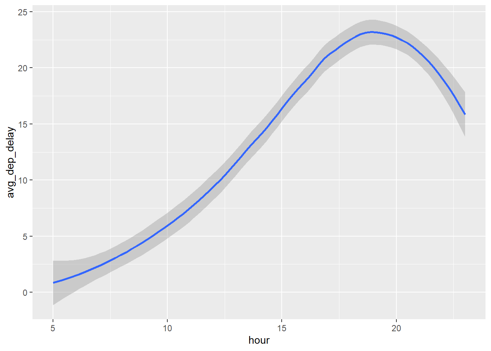
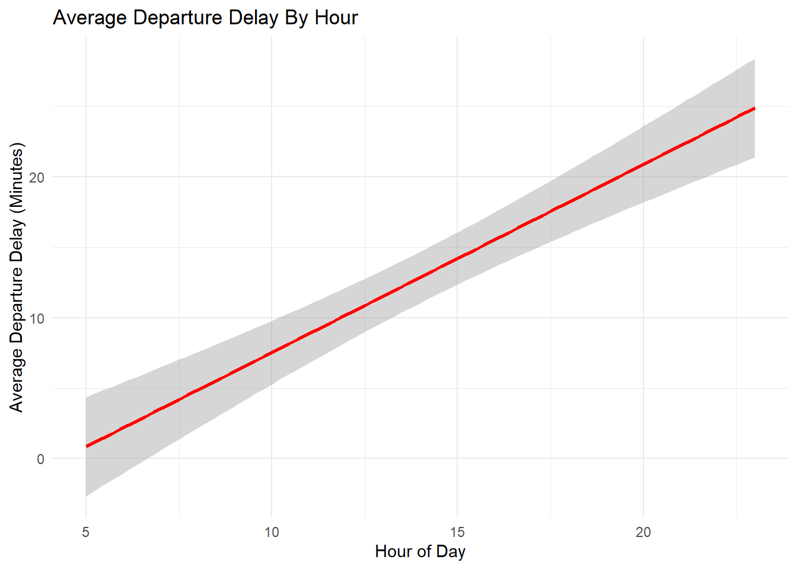
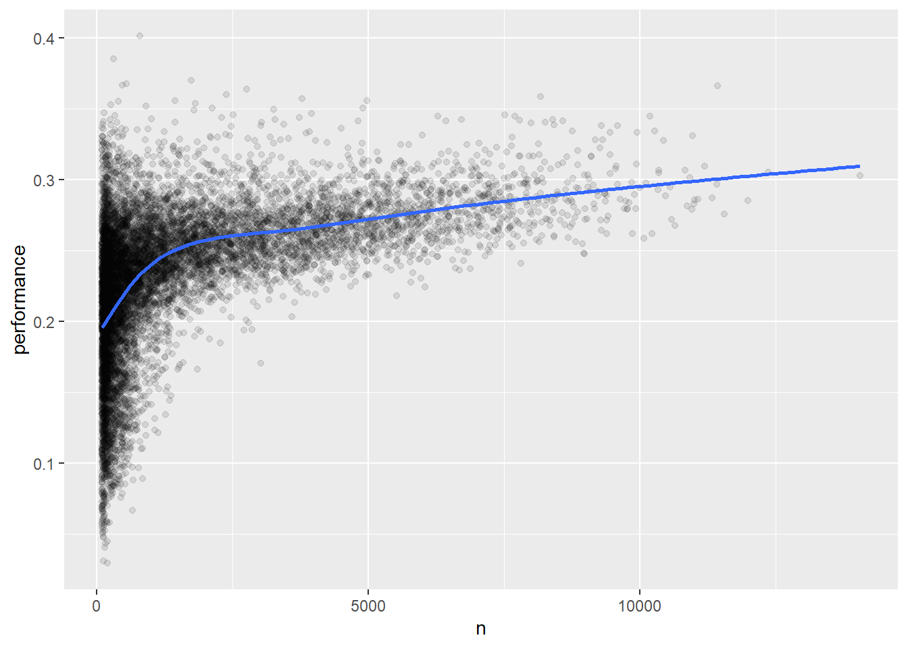

install.packages("nycflights13")3 Data transformation
3.1 Introduction
3.1.1 Prerequisites
We’ll be using dplyr with nycflights13, a package with multiple datasets: flights, weather, airlines, airports and planes.
If you haven’t installed nycflights13 yet, run this once in the Console:
library(tidyverse)
library(nycflights13)
library(palmerpenguins)3.1.2 nycflights13
nrow(flights)[1] 336776head(flights)# A tibble: 6 × 19
year month day dep_time sched_dep_time dep_delay arr_time sched_arr_time
<int> <int> <int> <int> <int> <dbl> <int> <int>
1 2013 1 1 517 515 2 830 819
2 2013 1 1 533 529 4 850 830
3 2013 1 1 542 540 2 923 850
4 2013 1 1 544 545 -1 1004 1022
5 2013 1 1 554 600 -6 812 837
6 2013 1 1 554 558 -4 740 728
# ℹ 11 more variables: arr_delay <dbl>, carrier <chr>, flight <int>,
# tailnum <chr>, origin <chr>, dest <chr>, air_time <dbl>, distance <dbl>,
# hour <dbl>, minute <dbl>, time_hour <dttm>head(weather)# A tibble: 6 × 15
origin year month day hour temp dewp humid wind_dir wind_speed wind_gust
<chr> <int> <int> <int> <int> <dbl> <dbl> <dbl> <dbl> <dbl> <dbl>
1 EWR 2013 1 1 1 39.0 26.1 59.4 270 10.4 NA
2 EWR 2013 1 1 2 39.0 27.0 61.6 250 8.06 NA
3 EWR 2013 1 1 3 39.0 28.0 64.4 240 11.5 NA
4 EWR 2013 1 1 4 39.9 28.0 62.2 250 12.7 NA
5 EWR 2013 1 1 5 39.0 28.0 64.4 260 12.7 NA
6 EWR 2013 1 1 6 37.9 28.0 67.2 240 11.5 NA
# ℹ 4 more variables: precip <dbl>, pressure <dbl>, visib <dbl>,
# time_hour <dttm>head(planes)# A tibble: 6 × 9
tailnum year type manufacturer model engines seats speed engine
<chr> <int> <chr> <chr> <chr> <int> <int> <int> <chr>
1 N10156 2004 Fixed wing multi … EMBRAER EMB-… 2 55 NA Turbo…
2 N102UW 1998 Fixed wing multi … AIRBUS INDU… A320… 2 182 NA Turbo…
3 N103US 1999 Fixed wing multi … AIRBUS INDU… A320… 2 182 NA Turbo…
4 N104UW 1999 Fixed wing multi … AIRBUS INDU… A320… 2 182 NA Turbo…
5 N10575 2002 Fixed wing multi … EMBRAER EMB-… 2 55 NA Turbo…
6 N105UW 1999 Fixed wing multi … AIRBUS INDU… A320… 2 182 NA Turbo…View(flights)
?flightsflights# A tibble: 336,776 × 19
year month day dep_time sched_dep_time dep_delay arr_time sched_arr_time
<int> <int> <int> <int> <int> <dbl> <int> <int>
1 2013 1 1 517 515 2 830 819
2 2013 1 1 533 529 4 850 830
3 2013 1 1 542 540 2 923 850
4 2013 1 1 544 545 -1 1004 1022
5 2013 1 1 554 600 -6 812 837
6 2013 1 1 554 558 -4 740 728
7 2013 1 1 555 600 -5 913 854
8 2013 1 1 557 600 -3 709 723
9 2013 1 1 557 600 -3 838 846
10 2013 1 1 558 600 -2 753 745
# ℹ 336,766 more rows
# ℹ 11 more variables: arr_delay <dbl>, carrier <chr>, flight <int>,
# tailnum <chr>, origin <chr>, dest <chr>, air_time <dbl>, distance <dbl>,
# hour <dbl>, minute <dbl>, time_hour <dttm>glimpse(flights)Rows: 336,776
Columns: 19
$ year <int> 2013, 2013, 2013, 2013, 2013, 2013, 2013, 2013, 2013, 2…
$ month <int> 1, 1, 1, 1, 1, 1, 1, 1, 1, 1, 1, 1, 1, 1, 1, 1, 1, 1, 1…
$ day <int> 1, 1, 1, 1, 1, 1, 1, 1, 1, 1, 1, 1, 1, 1, 1, 1, 1, 1, 1…
$ dep_time <int> 517, 533, 542, 544, 554, 554, 555, 557, 557, 558, 558, …
$ sched_dep_time <int> 515, 529, 540, 545, 600, 558, 600, 600, 600, 600, 600, …
$ dep_delay <dbl> 2, 4, 2, -1, -6, -4, -5, -3, -3, -2, -2, -2, -2, -2, -1…
$ arr_time <int> 830, 850, 923, 1004, 812, 740, 913, 709, 838, 753, 849,…
$ sched_arr_time <int> 819, 830, 850, 1022, 837, 728, 854, 723, 846, 745, 851,…
$ arr_delay <dbl> 11, 20, 33, -18, -25, 12, 19, -14, -8, 8, -2, -3, 7, -1…
$ carrier <chr> "UA", "UA", "AA", "B6", "DL", "UA", "B6", "EV", "B6", "…
$ flight <int> 1545, 1714, 1141, 725, 461, 1696, 507, 5708, 79, 301, 4…
$ tailnum <chr> "N14228", "N24211", "N619AA", "N804JB", "N668DN", "N394…
$ origin <chr> "EWR", "LGA", "JFK", "JFK", "LGA", "EWR", "EWR", "LGA",…
$ dest <chr> "IAH", "IAH", "MIA", "BQN", "ATL", "ORD", "FLL", "IAD",…
$ air_time <dbl> 227, 227, 160, 183, 116, 150, 158, 53, 140, 138, 149, 1…
$ distance <dbl> 1400, 1416, 1089, 1576, 762, 719, 1065, 229, 944, 733, …
$ hour <dbl> 5, 5, 5, 5, 6, 5, 6, 6, 6, 6, 6, 6, 6, 6, 6, 5, 6, 6, 6…
$ minute <dbl> 15, 29, 40, 45, 0, 58, 0, 0, 0, 0, 0, 0, 0, 0, 0, 59, 0…
$ time_hour <dttm> 2013-01-01 05:00:00, 2013-01-01 05:00:00, 2013-01-01 0…Setting width = Inf basically tells R “I don’t care how wide it is, show me everything”:
print(flights, width = Inf)# A tibble: 336,776 × 19
year month day dep_time sched_dep_time dep_delay arr_time sched_arr_time
<int> <int> <int> <int> <int> <dbl> <int> <int>
1 2013 1 1 517 515 2 830 819
2 2013 1 1 533 529 4 850 830
3 2013 1 1 542 540 2 923 850
4 2013 1 1 544 545 -1 1004 1022
5 2013 1 1 554 600 -6 812 837
6 2013 1 1 554 558 -4 740 728
7 2013 1 1 555 600 -5 913 854
8 2013 1 1 557 600 -3 709 723
9 2013 1 1 557 600 -3 838 846
10 2013 1 1 558 600 -2 753 745
arr_delay carrier flight tailnum origin dest air_time distance hour minute
<dbl> <chr> <int> <chr> <chr> <chr> <dbl> <dbl> <dbl> <dbl>
1 11 UA 1545 N14228 EWR IAH 227 1400 5 15
2 20 UA 1714 N24211 LGA IAH 227 1416 5 29
3 33 AA 1141 N619AA JFK MIA 160 1089 5 40
4 -18 B6 725 N804JB JFK BQN 183 1576 5 45
5 -25 DL 461 N668DN LGA ATL 116 762 6 0
6 12 UA 1696 N39463 EWR ORD 150 719 5 58
7 19 B6 507 N516JB EWR FLL 158 1065 6 0
8 -14 EV 5708 N829AS LGA IAD 53 229 6 0
9 -8 B6 79 N593JB JFK MCO 140 944 6 0
10 8 AA 301 N3ALAA LGA ORD 138 733 6 0
time_hour
<dttm>
1 2013-01-01 05:00:00
2 2013-01-01 05:00:00
3 2013-01-01 05:00:00
4 2013-01-01 05:00:00
5 2013-01-01 06:00:00
6 2013-01-01 05:00:00
7 2013-01-01 06:00:00
8 2013-01-01 06:00:00
9 2013-01-01 06:00:00
10 2013-01-01 06:00:00
# ℹ 336,766 more rowswidth= how wide the output is allowed to beInf= infinity = no limit
3.1.3 dplyr basics
dplyr uses verbs (functions). They differ, but have these things in common:
- The first argument is always a data frame.
- The subsequent arguments typically describe which columns to operate on, using the variable names (without quotes).
- The output is always a new data frame.
Complex problems require multiple verbs, so we use the pipe (|>). In brief, the pipe takes the thing on its left and passes it along to the function on its right.
An example (I am not familiar with this yet, lol):
flights |>
filter(dest == "IAH") |>
group_by(year, month, day) |>
summarize(
arr_delay = mean(arr_delay, na.rm = TRUE)
)# A tibble: 365 × 4
# Groups: year, month [12]
year month day arr_delay
<int> <int> <int> <dbl>
1 2013 1 1 17.8
2 2013 1 2 7
3 2013 1 3 18.3
4 2013 1 4 -3.2
5 2013 1 5 20.2
6 2013 1 6 9.28
7 2013 1 7 -7.74
8 2013 1 8 7.79
9 2013 1 9 18.1
10 2013 1 10 6.68
# ℹ 355 more rowsThe same idea for Miami:
flights |>
filter(dest == "MIA") |>
group_by(year, month, day) |>
summarize(
arr_delay = mean(arr_delay, na.rm = TRUE)
)# A tibble: 365 × 4
# Groups: year, month [12]
year month day arr_delay
<int> <int> <int> <dbl>
1 2013 1 1 5.8
2 2013 1 2 1.13
3 2013 1 3 9.29
4 2013 1 4 -5.69
5 2013 1 5 -11.6
6 2013 1 6 1.23
7 2013 1 7 -7.34
8 2013 1 8 -1.16
9 2013 1 9 -12.3
10 2013 1 10 -17.8
# ℹ 355 more rowsdplyr’s verbs are organized into four groups based on what they operate on:
- rows
- columns
- tables
- groups
3.2 Rows
3.2.1 filter()
filter() keeps rows based on the values of the columns. It lets you say “I only want to see rows where a certain condition is true” and throws away all the rest.
The first argument is always the data frame. The second and later arguments are the conditions that must be true. For instance, flights that departed more than 120 minutes late:
flights |>
filter(dep_delay > 120)# A tibble: 9,723 × 19
year month day dep_time sched_dep_time dep_delay arr_time sched_arr_time
<int> <int> <int> <int> <int> <dbl> <int> <int>
1 2013 1 1 848 1835 853 1001 1950
2 2013 1 1 957 733 144 1056 853
3 2013 1 1 1114 900 134 1447 1222
4 2013 1 1 1540 1338 122 2020 1825
5 2013 1 1 1815 1325 290 2120 1542
6 2013 1 1 1842 1422 260 1958 1535
7 2013 1 1 1856 1645 131 2212 2005
8 2013 1 1 1934 1725 129 2126 1855
9 2013 1 1 1938 1703 155 2109 1823
10 2013 1 1 1942 1705 157 2124 1830
# ℹ 9,713 more rows
# ℹ 11 more variables: arr_delay <dbl>, carrier <chr>, flight <int>,
# tailnum <chr>, origin <chr>, dest <chr>, air_time <dbl>, distance <dbl>,
# hour <dbl>, minute <dbl>, time_hour <dttm>As well as > (greater than), you can use >= (greater than or equal to), < (less than), <= (less than or equal to), == (equal to), and != (not equal to).
You can also combine conditions with & or , to mean “and” (check for both conditions), or with | to mean “or” (check for either condition).
Flights that departed on January 1:
flights |>
filter(month == 1, day == 1)# A tibble: 842 × 19
year month day dep_time sched_dep_time dep_delay arr_time sched_arr_time
<int> <int> <int> <int> <int> <dbl> <int> <int>
1 2013 1 1 517 515 2 830 819
2 2013 1 1 533 529 4 850 830
3 2013 1 1 542 540 2 923 850
4 2013 1 1 544 545 -1 1004 1022
5 2013 1 1 554 600 -6 812 837
6 2013 1 1 554 558 -4 740 728
7 2013 1 1 555 600 -5 913 854
8 2013 1 1 557 600 -3 709 723
9 2013 1 1 557 600 -3 838 846
10 2013 1 1 558 600 -2 753 745
# ℹ 832 more rows
# ℹ 11 more variables: arr_delay <dbl>, carrier <chr>, flight <int>,
# tailnum <chr>, origin <chr>, dest <chr>, air_time <dbl>, distance <dbl>,
# hour <dbl>, minute <dbl>, time_hour <dttm>or
flights |>
filter(month == 1 & day == 1)# A tibble: 842 × 19
year month day dep_time sched_dep_time dep_delay arr_time sched_arr_time
<int> <int> <int> <int> <int> <dbl> <int> <int>
1 2013 1 1 517 515 2 830 819
2 2013 1 1 533 529 4 850 830
3 2013 1 1 542 540 2 923 850
4 2013 1 1 544 545 -1 1004 1022
5 2013 1 1 554 600 -6 812 837
6 2013 1 1 554 558 -4 740 728
7 2013 1 1 555 600 -5 913 854
8 2013 1 1 557 600 -3 709 723
9 2013 1 1 557 600 -3 838 846
10 2013 1 1 558 600 -2 753 745
# ℹ 832 more rows
# ℹ 11 more variables: arr_delay <dbl>, carrier <chr>, flight <int>,
# tailnum <chr>, origin <chr>, dest <chr>, air_time <dbl>, distance <dbl>,
# hour <dbl>, minute <dbl>, time_hour <dttm>Flights that departed in January or February (| means “or”):
flights |>
filter(month == 1 | month == 2)# A tibble: 51,955 × 19
year month day dep_time sched_dep_time dep_delay arr_time sched_arr_time
<int> <int> <int> <int> <int> <dbl> <int> <int>
1 2013 1 1 517 515 2 830 819
2 2013 1 1 533 529 4 850 830
3 2013 1 1 542 540 2 923 850
4 2013 1 1 544 545 -1 1004 1022
5 2013 1 1 554 600 -6 812 837
6 2013 1 1 554 558 -4 740 728
7 2013 1 1 555 600 -5 913 854
8 2013 1 1 557 600 -3 709 723
9 2013 1 1 557 600 -3 838 846
10 2013 1 1 558 600 -2 753 745
# ℹ 51,945 more rows
# ℹ 11 more variables: arr_delay <dbl>, carrier <chr>, flight <int>,
# tailnum <chr>, origin <chr>, dest <chr>, air_time <dbl>, distance <dbl>,
# hour <dbl>, minute <dbl>, time_hour <dttm>When you’re combining | and ==, there is a shortcut: %in%. It keeps rows where the variable equals one of the values on the right. Instead of the code above, you can write:
flights |>
filter(month %in% c(1, 2))# A tibble: 51,955 × 19
year month day dep_time sched_dep_time dep_delay arr_time sched_arr_time
<int> <int> <int> <int> <int> <dbl> <int> <int>
1 2013 1 1 517 515 2 830 819
2 2013 1 1 533 529 4 850 830
3 2013 1 1 542 540 2 923 850
4 2013 1 1 544 545 -1 1004 1022
5 2013 1 1 554 600 -6 812 837
6 2013 1 1 554 558 -4 740 728
7 2013 1 1 555 600 -5 913 854
8 2013 1 1 557 600 -3 709 723
9 2013 1 1 557 600 -3 838 846
10 2013 1 1 558 600 -2 753 745
# ℹ 51,945 more rows
# ℹ 11 more variables: arr_delay <dbl>, carrier <chr>, flight <int>,
# tailnum <chr>, origin <chr>, dest <chr>, air_time <dbl>, distance <dbl>,
# hour <dbl>, minute <dbl>, time_hour <dttm>flights |>
filter(month %in% c(1, 2, 3, 4))# A tibble: 109,119 × 19
year month day dep_time sched_dep_time dep_delay arr_time sched_arr_time
<int> <int> <int> <int> <int> <dbl> <int> <int>
1 2013 1 1 517 515 2 830 819
2 2013 1 1 533 529 4 850 830
3 2013 1 1 542 540 2 923 850
4 2013 1 1 544 545 -1 1004 1022
5 2013 1 1 554 600 -6 812 837
6 2013 1 1 554 558 -4 740 728
7 2013 1 1 555 600 -5 913 854
8 2013 1 1 557 600 -3 709 723
9 2013 1 1 557 600 -3 838 846
10 2013 1 1 558 600 -2 753 745
# ℹ 109,109 more rows
# ℹ 11 more variables: arr_delay <dbl>, carrier <chr>, flight <int>,
# tailnum <chr>, origin <chr>, dest <chr>, air_time <dbl>, distance <dbl>,
# hour <dbl>, minute <dbl>, time_hour <dttm>Flights going to Houston OR Chicago:
flights |>
filter(dest %in% c("IAH", "ORD"))# A tibble: 24,481 × 19
year month day dep_time sched_dep_time dep_delay arr_time sched_arr_time
<int> <int> <int> <int> <int> <dbl> <int> <int>
1 2013 1 1 517 515 2 830 819
2 2013 1 1 533 529 4 850 830
3 2013 1 1 554 558 -4 740 728
4 2013 1 1 558 600 -2 753 745
5 2013 1 1 608 600 8 807 735
6 2013 1 1 623 627 -4 933 932
7 2013 1 1 629 630 -1 824 810
8 2013 1 1 656 700 -4 854 850
9 2013 1 1 709 700 9 852 832
10 2013 1 1 715 713 2 911 850
# ℹ 24,471 more rows
# ℹ 11 more variables: arr_delay <dbl>, carrier <chr>, flight <int>,
# tailnum <chr>, origin <chr>, dest <chr>, air_time <dbl>, distance <dbl>,
# hour <dbl>, minute <dbl>, time_hour <dttm>Flights of United Airlines and American Airlines:
flights |>
filter(carrier %in% c("UA", "AA"))# A tibble: 91,394 × 19
year month day dep_time sched_dep_time dep_delay arr_time sched_arr_time
<int> <int> <int> <int> <int> <dbl> <int> <int>
1 2013 1 1 517 515 2 830 819
2 2013 1 1 533 529 4 850 830
3 2013 1 1 542 540 2 923 850
4 2013 1 1 554 558 -4 740 728
5 2013 1 1 558 600 -2 753 745
6 2013 1 1 558 600 -2 924 917
7 2013 1 1 558 600 -2 923 937
8 2013 1 1 559 600 -1 941 910
9 2013 1 1 559 600 -1 854 902
10 2013 1 1 606 610 -4 858 910
# ℹ 91,384 more rows
# ℹ 11 more variables: arr_delay <dbl>, carrier <chr>, flight <int>,
# tailnum <chr>, origin <chr>, dest <chr>, air_time <dbl>, distance <dbl>,
# hour <dbl>, minute <dbl>, time_hour <dttm>It reads as “keep rows where month is IN this list of values”. Also note that numbers never get quotes, but text always does.
To save the new data frame that dplyr has created, you need to assign it with <-:
jan1 <- flights |>
filter(month == 1, day == 1)
jan1# A tibble: 842 × 19
year month day dep_time sched_dep_time dep_delay arr_time sched_arr_time
<int> <int> <int> <int> <int> <dbl> <int> <int>
1 2013 1 1 517 515 2 830 819
2 2013 1 1 533 529 4 850 830
3 2013 1 1 542 540 2 923 850
4 2013 1 1 544 545 -1 1004 1022
5 2013 1 1 554 600 -6 812 837
6 2013 1 1 554 558 -4 740 728
7 2013 1 1 555 600 -5 913 854
8 2013 1 1 557 600 -3 709 723
9 2013 1 1 557 600 -3 838 846
10 2013 1 1 558 600 -2 753 745
# ℹ 832 more rows
# ℹ 11 more variables: arr_delay <dbl>, carrier <chr>, flight <int>,
# tailnum <chr>, origin <chr>, dest <chr>, air_time <dbl>, distance <dbl>,
# hour <dbl>, minute <dbl>, time_hour <dttm>It works on other data too:
penguins |>
filter(species == "Adelie")# A tibble: 152 × 8
species island bill_length_mm bill_depth_mm flipper_length_mm body_mass_g
<fct> <fct> <dbl> <dbl> <int> <int>
1 Adelie Torgersen 39.1 18.7 181 3750
2 Adelie Torgersen 39.5 17.4 186 3800
3 Adelie Torgersen 40.3 18 195 3250
4 Adelie Torgersen NA NA NA NA
5 Adelie Torgersen 36.7 19.3 193 3450
6 Adelie Torgersen 39.3 20.6 190 3650
7 Adelie Torgersen 38.9 17.8 181 3625
8 Adelie Torgersen 39.2 19.6 195 4675
9 Adelie Torgersen 34.1 18.1 193 3475
10 Adelie Torgersen 42 20.2 190 4250
# ℹ 142 more rows
# ℹ 2 more variables: sex <fct>, year <int>Saving a data frame to a file:
write_csv(jan1, "jan2.csv")How to commit to GitHub in the Terminal:
git add .
git commit -m "describe what you did"
git push3.2.2 Common mistakes
(Notes to come.)
3.2.3 arrange()
arrange() sorts your data from lowest to highest (or highest to lowest) based on a column you choose.
If you provide more than one column name, each additional column is used to break ties in the values of the preceding columns. For instance:
flights |>
arrange(year, month, day, dep_time)# A tibble: 336,776 × 19
year month day dep_time sched_dep_time dep_delay arr_time sched_arr_time
<int> <int> <int> <int> <int> <dbl> <int> <int>
1 2013 1 1 517 515 2 830 819
2 2013 1 1 533 529 4 850 830
3 2013 1 1 542 540 2 923 850
4 2013 1 1 544 545 -1 1004 1022
5 2013 1 1 554 600 -6 812 837
6 2013 1 1 554 558 -4 740 728
7 2013 1 1 555 600 -5 913 854
8 2013 1 1 557 600 -3 709 723
9 2013 1 1 557 600 -3 838 846
10 2013 1 1 558 600 -2 753 745
# ℹ 336,766 more rows
# ℹ 11 more variables: arr_delay <dbl>, carrier <chr>, flight <int>,
# tailnum <chr>, origin <chr>, dest <chr>, air_time <dbl>, distance <dbl>,
# hour <dbl>, minute <dbl>, time_hour <dttm>Each column only kicks in when the previous one results in a tie.
dest_filter <- flights |>
arrange(year, month, dest)This sorts flights chronologically and then alphabetically by destination within each month. You’d see all January flights going to destinations starting with A, B, C and so on.
write.csv(dest_filter, "dest_filter.csv")Which flights left earliest in the day?
flights |>
arrange(dep_time)# A tibble: 336,776 × 19
year month day dep_time sched_dep_time dep_delay arr_time sched_arr_time
<int> <int> <int> <int> <int> <dbl> <int> <int>
1 2013 1 13 1 2249 72 108 2357
2 2013 1 31 1 2100 181 124 2225
3 2013 11 13 1 2359 2 442 440
4 2013 12 16 1 2359 2 447 437
5 2013 12 20 1 2359 2 430 440
6 2013 12 26 1 2359 2 437 440
7 2013 12 30 1 2359 2 441 437
8 2013 2 11 1 2100 181 111 2225
9 2013 2 24 1 2245 76 121 2354
10 2013 3 8 1 2355 6 431 440
# ℹ 336,766 more rows
# ℹ 11 more variables: arr_delay <dbl>, carrier <chr>, flight <int>,
# tailnum <chr>, origin <chr>, dest <chr>, air_time <dbl>, distance <dbl>,
# hour <dbl>, minute <dbl>, time_hour <dttm>To re-order by a column in descending (big-to-small) order, use desc(). This orders from most to least delayed:
flights |>
arrange(desc(dep_delay))# A tibble: 336,776 × 19
year month day dep_time sched_dep_time dep_delay arr_time sched_arr_time
<int> <int> <int> <int> <int> <dbl> <int> <int>
1 2013 1 9 641 900 1301 1242 1530
2 2013 6 15 1432 1935 1137 1607 2120
3 2013 1 10 1121 1635 1126 1239 1810
4 2013 9 20 1139 1845 1014 1457 2210
5 2013 7 22 845 1600 1005 1044 1815
6 2013 4 10 1100 1900 960 1342 2211
7 2013 3 17 2321 810 911 135 1020
8 2013 6 27 959 1900 899 1236 2226
9 2013 7 22 2257 759 898 121 1026
10 2013 12 5 756 1700 896 1058 2020
# ℹ 336,766 more rows
# ℹ 11 more variables: arr_delay <dbl>, carrier <chr>, flight <int>,
# tailnum <chr>, origin <chr>, dest <chr>, air_time <dbl>, distance <dbl>,
# hour <dbl>, minute <dbl>, time_hour <dttm>Sort flights chronologically by year, month and day, and within each day show the most delayed flights first:
flights |>
arrange(year, month, day, desc(dep_delay))# A tibble: 336,776 × 19
year month day dep_time sched_dep_time dep_delay arr_time sched_arr_time
<int> <int> <int> <int> <int> <dbl> <int> <int>
1 2013 1 1 848 1835 853 1001 1950
2 2013 1 1 2343 1724 379 314 1938
3 2013 1 1 1815 1325 290 2120 1542
4 2013 1 1 2205 1720 285 46 2040
5 2013 1 1 1842 1422 260 1958 1535
6 2013 1 1 2115 1700 255 2330 1920
7 2013 1 1 2006 1630 216 2230 1848
8 2013 1 1 2312 2000 192 21 2110
9 2013 1 1 1942 1705 157 2124 1830
10 2013 1 1 1938 1703 155 2109 1823
# ℹ 336,766 more rows
# ℹ 11 more variables: arr_delay <dbl>, carrier <chr>, flight <int>,
# tailnum <chr>, origin <chr>, dest <chr>, air_time <dbl>, distance <dbl>,
# hour <dbl>, minute <dbl>, time_hour <dttm>3.2.4 distinct()
distinct() removes duplicate rows from the data, keeping only unique rows.
flights |>
distinct()# A tibble: 336,776 × 19
year month day dep_time sched_dep_time dep_delay arr_time sched_arr_time
<int> <int> <int> <int> <int> <dbl> <int> <int>
1 2013 1 1 517 515 2 830 819
2 2013 1 1 533 529 4 850 830
3 2013 1 1 542 540 2 923 850
4 2013 1 1 544 545 -1 1004 1022
5 2013 1 1 554 600 -6 812 837
6 2013 1 1 554 558 -4 740 728
7 2013 1 1 555 600 -5 913 854
8 2013 1 1 557 600 -3 709 723
9 2013 1 1 557 600 -3 838 846
10 2013 1 1 558 600 -2 753 745
# ℹ 336,766 more rows
# ℹ 11 more variables: arr_delay <dbl>, carrier <chr>, flight <int>,
# tailnum <chr>, origin <chr>, dest <chr>, air_time <dbl>, distance <dbl>,
# hour <dbl>, minute <dbl>, time_hour <dttm>The difference from filter():
# keep only Houston flights
flights |>
filter(dest == "IAH")# A tibble: 7,198 × 19
year month day dep_time sched_dep_time dep_delay arr_time sched_arr_time
<int> <int> <int> <int> <int> <dbl> <int> <int>
1 2013 1 1 517 515 2 830 819
2 2013 1 1 533 529 4 850 830
3 2013 1 1 623 627 -4 933 932
4 2013 1 1 728 732 -4 1041 1038
5 2013 1 1 739 739 0 1104 1038
6 2013 1 1 908 908 0 1228 1219
7 2013 1 1 1028 1026 2 1350 1339
8 2013 1 1 1044 1045 -1 1352 1351
9 2013 1 1 1114 900 134 1447 1222
10 2013 1 1 1205 1200 5 1503 1505
# ℹ 7,188 more rows
# ℹ 11 more variables: arr_delay <dbl>, carrier <chr>, flight <int>,
# tailnum <chr>, origin <chr>, dest <chr>, air_time <dbl>, distance <dbl>,
# hour <dbl>, minute <dbl>, time_hour <dttm># keep only unique destinations
flights |>
distinct(dest)# A tibble: 105 × 1
dest
<chr>
1 IAH
2 MIA
3 BQN
4 ATL
5 ORD
6 FLL
7 IAD
8 MCO
9 PBI
10 TPA
# ℹ 95 more rowsflights |>
distinct(dest) |>
nrow()[1] 105penguins |>
distinct(bill_depth_mm) |>
nrow()[1] 81Finding unique pairs of dest and origin:
flights |>
distinct(dest, origin)# A tibble: 224 × 2
dest origin
<chr> <chr>
1 IAH EWR
2 IAH LGA
3 MIA JFK
4 BQN JFK
5 ATL LGA
6 ORD EWR
7 FLL EWR
8 IAD LGA
9 MCO JFK
10 ORD LGA
# ℹ 214 more rowsflights |>
distinct(dest, origin, carrier)# A tibble: 439 × 3
dest origin carrier
<chr> <chr> <chr>
1 IAH EWR UA
2 IAH LGA UA
3 MIA JFK AA
4 BQN JFK B6
5 ATL LGA DL
6 ORD EWR UA
7 FLL EWR B6
8 IAD LGA EV
9 MCO JFK B6
10 ORD LGA AA
# ℹ 429 more rowsdistinct() removes duplicate combinations, not necessarily duplicate values in each column individually. So distinct(origin, dest) doesn’t give unique origins and unique destinations separately; it gives unique pairs of them.
To keep the other columns when filtering for unique rows, use the .keep_all = TRUE option:
flights |>
distinct(dest, origin, carrier, .keep_all = TRUE)# A tibble: 439 × 19
year month day dep_time sched_dep_time dep_delay arr_time sched_arr_time
<int> <int> <int> <int> <int> <dbl> <int> <int>
1 2013 1 1 517 515 2 830 819
2 2013 1 1 533 529 4 850 830
3 2013 1 1 542 540 2 923 850
4 2013 1 1 544 545 -1 1004 1022
5 2013 1 1 554 600 -6 812 837
6 2013 1 1 554 558 -4 740 728
7 2013 1 1 555 600 -5 913 854
8 2013 1 1 557 600 -3 709 723
9 2013 1 1 557 600 -3 838 846
10 2013 1 1 558 600 -2 753 745
# ℹ 429 more rows
# ℹ 11 more variables: arr_delay <dbl>, carrier <chr>, flight <int>,
# tailnum <chr>, origin <chr>, dest <chr>, air_time <dbl>, distance <dbl>,
# hour <dbl>, minute <dbl>, time_hour <dttm>flights |>
distinct(origin, dest, .keep_all = TRUE) |>
nrow()[1] 224.keep_all = TRUE is just saying “yes, I want unique origin-dest combinations, but don’t throw away the rest of my data”.
distinct() only shows you the unique combinations. It doesn’t tell you how many times each one appears:
flights |>
distinct(origin, dest)# A tibble: 224 × 2
origin dest
<chr> <chr>
1 EWR IAH
2 LGA IAH
3 JFK MIA
4 JFK BQN
5 LGA ATL
6 EWR ORD
7 EWR FLL
8 LGA IAD
9 JFK MCO
10 LGA ORD
# ℹ 214 more rowscount() tells you how many times each combination appears:
flights |>
count(origin, dest)# A tibble: 224 × 3
origin dest n
<chr> <chr> <int>
1 EWR ALB 439
2 EWR ANC 8
3 EWR ATL 5022
4 EWR AUS 968
5 EWR AVL 265
6 EWR BDL 443
7 EWR BNA 2336
8 EWR BOS 5327
9 EWR BQN 297
10 EWR BTV 931
# ℹ 214 more rowsAdding sort = TRUE arranges by most common first:
flights |>
count(origin, dest, sort = TRUE)# A tibble: 224 × 3
origin dest n
<chr> <chr> <int>
1 JFK LAX 11262
2 LGA ATL 10263
3 LGA ORD 8857
4 JFK SFO 8204
5 LGA CLT 6168
6 EWR ORD 6100
7 JFK BOS 5898
8 LGA MIA 5781
9 JFK MCO 5464
10 EWR BOS 5327
# ℹ 214 more rowsflights |>
count(dest, sort = TRUE)# A tibble: 105 × 2
dest n
<chr> <int>
1 ORD 17283
2 ATL 17215
3 LAX 16174
4 BOS 15508
5 MCO 14082
6 CLT 14064
7 SFO 13331
8 FLL 12055
9 MIA 11728
10 DCA 9705
# ℹ 95 more rows3.2.5 Exercises
1. In a single pipeline for each condition, find all flights that meet the condition.
Had an arrival delay of two or more hours:
flights |>
filter(arr_delay >= 120) |>
arrange(desc(arr_delay))# A tibble: 10,200 × 19
year month day dep_time sched_dep_time dep_delay arr_time sched_arr_time
<int> <int> <int> <int> <int> <dbl> <int> <int>
1 2013 1 9 641 900 1301 1242 1530
2 2013 6 15 1432 1935 1137 1607 2120
3 2013 1 10 1121 1635 1126 1239 1810
4 2013 9 20 1139 1845 1014 1457 2210
5 2013 7 22 845 1600 1005 1044 1815
6 2013 4 10 1100 1900 960 1342 2211
7 2013 3 17 2321 810 911 135 1020
8 2013 7 22 2257 759 898 121 1026
9 2013 12 5 756 1700 896 1058 2020
10 2013 5 3 1133 2055 878 1250 2215
# ℹ 10,190 more rows
# ℹ 11 more variables: arr_delay <dbl>, carrier <chr>, flight <int>,
# tailnum <chr>, origin <chr>, dest <chr>, air_time <dbl>, distance <dbl>,
# hour <dbl>, minute <dbl>, time_hour <dttm>Flew to Houston (IAH or HOU):
flights |>
filter(dest %in% c("IAH", "HOU"))# A tibble: 9,313 × 19
year month day dep_time sched_dep_time dep_delay arr_time sched_arr_time
<int> <int> <int> <int> <int> <dbl> <int> <int>
1 2013 1 1 517 515 2 830 819
2 2013 1 1 533 529 4 850 830
3 2013 1 1 623 627 -4 933 932
4 2013 1 1 728 732 -4 1041 1038
5 2013 1 1 739 739 0 1104 1038
6 2013 1 1 908 908 0 1228 1219
7 2013 1 1 1028 1026 2 1350 1339
8 2013 1 1 1044 1045 -1 1352 1351
9 2013 1 1 1114 900 134 1447 1222
10 2013 1 1 1205 1200 5 1503 1505
# ℹ 9,303 more rows
# ℹ 11 more variables: arr_delay <dbl>, carrier <chr>, flight <int>,
# tailnum <chr>, origin <chr>, dest <chr>, air_time <dbl>, distance <dbl>,
# hour <dbl>, minute <dbl>, time_hour <dttm>or
flights |>
filter(dest == "IAH" | dest == "HOU")# A tibble: 9,313 × 19
year month day dep_time sched_dep_time dep_delay arr_time sched_arr_time
<int> <int> <int> <int> <int> <dbl> <int> <int>
1 2013 1 1 517 515 2 830 819
2 2013 1 1 533 529 4 850 830
3 2013 1 1 623 627 -4 933 932
4 2013 1 1 728 732 -4 1041 1038
5 2013 1 1 739 739 0 1104 1038
6 2013 1 1 908 908 0 1228 1219
7 2013 1 1 1028 1026 2 1350 1339
8 2013 1 1 1044 1045 -1 1352 1351
9 2013 1 1 1114 900 134 1447 1222
10 2013 1 1 1205 1200 5 1503 1505
# ℹ 9,303 more rows
# ℹ 11 more variables: arr_delay <dbl>, carrier <chr>, flight <int>,
# tailnum <chr>, origin <chr>, dest <chr>, air_time <dbl>, distance <dbl>,
# hour <dbl>, minute <dbl>, time_hour <dttm>Were operated by United, American, or Delta:
flights |>
filter(carrier %in% c("UA", "AA", "DL"))# A tibble: 139,504 × 19
year month day dep_time sched_dep_time dep_delay arr_time sched_arr_time
<int> <int> <int> <int> <int> <dbl> <int> <int>
1 2013 1 1 517 515 2 830 819
2 2013 1 1 533 529 4 850 830
3 2013 1 1 542 540 2 923 850
4 2013 1 1 554 600 -6 812 837
5 2013 1 1 554 558 -4 740 728
6 2013 1 1 558 600 -2 753 745
7 2013 1 1 558 600 -2 924 917
8 2013 1 1 558 600 -2 923 937
9 2013 1 1 559 600 -1 941 910
10 2013 1 1 559 600 -1 854 902
# ℹ 139,494 more rows
# ℹ 11 more variables: arr_delay <dbl>, carrier <chr>, flight <int>,
# tailnum <chr>, origin <chr>, dest <chr>, air_time <dbl>, distance <dbl>,
# hour <dbl>, minute <dbl>, time_hour <dttm>Departed in summer (July, August, and September):
flights |>
filter(month %in% c(7, 8, 9))# A tibble: 86,326 × 19
year month day dep_time sched_dep_time dep_delay arr_time sched_arr_time
<int> <int> <int> <int> <int> <dbl> <int> <int>
1 2013 7 1 1 2029 212 236 2359
2 2013 7 1 2 2359 3 344 344
3 2013 7 1 29 2245 104 151 1
4 2013 7 1 43 2130 193 322 14
5 2013 7 1 44 2150 174 300 100
6 2013 7 1 46 2051 235 304 2358
7 2013 7 1 48 2001 287 308 2305
8 2013 7 1 58 2155 183 335 43
9 2013 7 1 100 2146 194 327 30
10 2013 7 1 100 2245 135 337 135
# ℹ 86,316 more rows
# ℹ 11 more variables: arr_delay <dbl>, carrier <chr>, flight <int>,
# tailnum <chr>, origin <chr>, dest <chr>, air_time <dbl>, distance <dbl>,
# hour <dbl>, minute <dbl>, time_hour <dttm>Arrived more than two hours late but didn’t leave late:
flights |>
filter(arr_delay > 120, dep_delay == 0)# A tibble: 3 × 19
year month day dep_time sched_dep_time dep_delay arr_time sched_arr_time
<int> <int> <int> <int> <int> <dbl> <int> <int>
1 2013 10 7 1350 1350 0 1736 1526
2 2013 5 23 1810 1810 0 2208 2000
3 2013 7 1 905 905 0 1443 1223
# ℹ 11 more variables: arr_delay <dbl>, carrier <chr>, flight <int>,
# tailnum <chr>, origin <chr>, dest <chr>, air_time <dbl>, distance <dbl>,
# hour <dbl>, minute <dbl>, time_hour <dttm>Even better:
flights |>
filter(arr_delay >= 120 & dep_delay <= 0)# A tibble: 29 × 19
year month day dep_time sched_dep_time dep_delay arr_time sched_arr_time
<int> <int> <int> <int> <int> <dbl> <int> <int>
1 2013 1 27 1419 1420 -1 1754 1550
2 2013 10 7 1350 1350 0 1736 1526
3 2013 10 7 1357 1359 -2 1858 1654
4 2013 10 16 657 700 -3 1258 1056
5 2013 11 1 658 700 -2 1329 1015
6 2013 3 18 1844 1847 -3 39 2219
7 2013 4 17 1635 1640 -5 2049 1845
8 2013 4 18 558 600 -2 1149 850
9 2013 4 18 655 700 -5 1213 950
10 2013 5 22 1827 1830 -3 2217 2010
# ℹ 19 more rows
# ℹ 11 more variables: arr_delay <dbl>, carrier <chr>, flight <int>,
# tailnum <chr>, origin <chr>, dest <chr>, air_time <dbl>, distance <dbl>,
# hour <dbl>, minute <dbl>, time_hour <dttm>Using dep_delay <= 0 is better because “didn’t leave late” also includes flights that left early (a negative delay).
Were delayed by at least an hour, but made up over 30 minutes in flight:
flights |>
filter(dep_delay >= 60, dep_delay - arr_delay > 30)# A tibble: 1,844 × 19
year month day dep_time sched_dep_time dep_delay arr_time sched_arr_time
<int> <int> <int> <int> <int> <dbl> <int> <int>
1 2013 1 1 2205 1720 285 46 2040
2 2013 1 1 2326 2130 116 131 18
3 2013 1 3 1503 1221 162 1803 1555
4 2013 1 3 1839 1700 99 2056 1950
5 2013 1 3 1850 1745 65 2148 2120
6 2013 1 3 1941 1759 102 2246 2139
7 2013 1 3 1950 1845 65 2228 2227
8 2013 1 3 2015 1915 60 2135 2111
9 2013 1 3 2257 2000 177 45 2224
10 2013 1 4 1917 1700 137 2135 1950
# ℹ 1,834 more rows
# ℹ 11 more variables: arr_delay <dbl>, carrier <chr>, flight <int>,
# tailnum <chr>, origin <chr>, dest <chr>, air_time <dbl>, distance <dbl>,
# hour <dbl>, minute <dbl>, time_hour <dttm>Making up time means the arrival delay was less than the departure delay by more than 30 minutes.
2. Sort flights to find the flights with the longest departure delays. Find the flights that left earliest in the morning.
flights |>
arrange(desc(dep_delay))# A tibble: 336,776 × 19
year month day dep_time sched_dep_time dep_delay arr_time sched_arr_time
<int> <int> <int> <int> <int> <dbl> <int> <int>
1 2013 1 9 641 900 1301 1242 1530
2 2013 6 15 1432 1935 1137 1607 2120
3 2013 1 10 1121 1635 1126 1239 1810
4 2013 9 20 1139 1845 1014 1457 2210
5 2013 7 22 845 1600 1005 1044 1815
6 2013 4 10 1100 1900 960 1342 2211
7 2013 3 17 2321 810 911 135 1020
8 2013 6 27 959 1900 899 1236 2226
9 2013 7 22 2257 759 898 121 1026
10 2013 12 5 756 1700 896 1058 2020
# ℹ 336,766 more rows
# ℹ 11 more variables: arr_delay <dbl>, carrier <chr>, flight <int>,
# tailnum <chr>, origin <chr>, dest <chr>, air_time <dbl>, distance <dbl>,
# hour <dbl>, minute <dbl>, time_hour <dttm>flights |>
arrange(dep_time)# A tibble: 336,776 × 19
year month day dep_time sched_dep_time dep_delay arr_time sched_arr_time
<int> <int> <int> <int> <int> <dbl> <int> <int>
1 2013 1 13 1 2249 72 108 2357
2 2013 1 31 1 2100 181 124 2225
3 2013 11 13 1 2359 2 442 440
4 2013 12 16 1 2359 2 447 437
5 2013 12 20 1 2359 2 430 440
6 2013 12 26 1 2359 2 437 440
7 2013 12 30 1 2359 2 441 437
8 2013 2 11 1 2100 181 111 2225
9 2013 2 24 1 2245 76 121 2354
10 2013 3 8 1 2355 6 431 440
# ℹ 336,766 more rows
# ℹ 11 more variables: arr_delay <dbl>, carrier <chr>, flight <int>,
# tailnum <chr>, origin <chr>, dest <chr>, air_time <dbl>, distance <dbl>,
# hour <dbl>, minute <dbl>, time_hour <dttm>or
flights |>
arrange(time_hour)# A tibble: 336,776 × 19
year month day dep_time sched_dep_time dep_delay arr_time sched_arr_time
<int> <int> <int> <int> <int> <dbl> <int> <int>
1 2013 1 1 517 515 2 830 819
2 2013 1 1 533 529 4 850 830
3 2013 1 1 542 540 2 923 850
4 2013 1 1 544 545 -1 1004 1022
5 2013 1 1 554 558 -4 740 728
6 2013 1 1 559 559 0 702 706
7 2013 1 1 554 600 -6 812 837
8 2013 1 1 555 600 -5 913 854
9 2013 1 1 557 600 -3 709 723
10 2013 1 1 557 600 -3 838 846
# ℹ 336,766 more rows
# ℹ 11 more variables: arr_delay <dbl>, carrier <chr>, flight <int>,
# tailnum <chr>, origin <chr>, dest <chr>, air_time <dbl>, distance <dbl>,
# hour <dbl>, minute <dbl>, time_hour <dttm>time_hour might be a better column in some ways, because it stores the time properly as a real date-time object, without the gaps that clock-style times like dep_time have.
3. Sort flights to find the fastest flights. (Hint: try including a math calculation inside of your function.)
flights |>
arrange(desc(distance / air_time))# A tibble: 336,776 × 19
year month day dep_time sched_dep_time dep_delay arr_time sched_arr_time
<int> <int> <int> <int> <int> <dbl> <int> <int>
1 2013 5 25 1709 1700 9 1923 1937
2 2013 7 2 1558 1513 45 1745 1719
3 2013 5 13 2040 2025 15 2225 2226
4 2013 3 23 1914 1910 4 2045 2043
5 2013 1 12 1559 1600 -1 1849 1917
6 2013 11 17 650 655 -5 1059 1150
7 2013 2 21 2355 2358 -3 412 438
8 2013 11 17 759 800 -1 1212 1255
9 2013 11 16 2003 1925 38 17 36
10 2013 11 16 2349 2359 -10 402 440
# ℹ 336,766 more rows
# ℹ 11 more variables: arr_delay <dbl>, carrier <chr>, flight <int>,
# tailnum <chr>, origin <chr>, dest <chr>, air_time <dbl>, distance <dbl>,
# hour <dbl>, minute <dbl>, time_hour <dttm>Or, if “fastest” means shortest flight duration:
flights |>
arrange(air_time)# A tibble: 336,776 × 19
year month day dep_time sched_dep_time dep_delay arr_time sched_arr_time
<int> <int> <int> <int> <int> <dbl> <int> <int>
1 2013 1 16 1355 1315 40 1442 1411
2 2013 4 13 537 527 10 622 628
3 2013 12 6 922 851 31 1021 954
4 2013 2 3 2153 2129 24 2247 2224
5 2013 2 5 1303 1315 -12 1342 1411
6 2013 2 12 2123 2130 -7 2211 2225
7 2013 3 2 1450 1500 -10 1547 1608
8 2013 3 8 2026 1935 51 2131 2056
9 2013 3 18 1456 1329 87 1533 1426
10 2013 3 19 2226 2145 41 2305 2246
# ℹ 336,766 more rows
# ℹ 11 more variables: arr_delay <dbl>, carrier <chr>, flight <int>,
# tailnum <chr>, origin <chr>, dest <chr>, air_time <dbl>, distance <dbl>,
# hour <dbl>, minute <dbl>, time_hour <dttm>4. Was there a flight on every day of 2013?
flights |>
distinct(year, month, day) |>
count()# A tibble: 1 × 1
n
<int>
1 365or
flights |>
distinct(year, month, day) |>
nrow()[1] 3655. Which flights traveled the farthest distance? Which traveled the least distance?
flights |>
arrange(desc(distance))# A tibble: 336,776 × 19
year month day dep_time sched_dep_time dep_delay arr_time sched_arr_time
<int> <int> <int> <int> <int> <dbl> <int> <int>
1 2013 1 1 857 900 -3 1516 1530
2 2013 1 2 909 900 9 1525 1530
3 2013 1 3 914 900 14 1504 1530
4 2013 1 4 900 900 0 1516 1530
5 2013 1 5 858 900 -2 1519 1530
6 2013 1 6 1019 900 79 1558 1530
7 2013 1 7 1042 900 102 1620 1530
8 2013 1 8 901 900 1 1504 1530
9 2013 1 9 641 900 1301 1242 1530
10 2013 1 10 859 900 -1 1449 1530
# ℹ 336,766 more rows
# ℹ 11 more variables: arr_delay <dbl>, carrier <chr>, flight <int>,
# tailnum <chr>, origin <chr>, dest <chr>, air_time <dbl>, distance <dbl>,
# hour <dbl>, minute <dbl>, time_hour <dttm>and
flights |>
arrange(distance)# A tibble: 336,776 × 19
year month day dep_time sched_dep_time dep_delay arr_time sched_arr_time
<int> <int> <int> <int> <int> <dbl> <int> <int>
1 2013 7 27 NA 106 NA NA 245
2 2013 1 3 2127 2129 -2 2222 2224
3 2013 1 4 1240 1200 40 1333 1306
4 2013 1 4 1829 1615 134 1937 1721
5 2013 1 4 2128 2129 -1 2218 2224
6 2013 1 5 1155 1200 -5 1241 1306
7 2013 1 6 2125 2129 -4 2224 2224
8 2013 1 7 2124 2129 -5 2212 2224
9 2013 1 8 2127 2130 -3 2304 2225
10 2013 1 9 2126 2129 -3 2217 2224
# ℹ 336,766 more rows
# ℹ 11 more variables: arr_delay <dbl>, carrier <chr>, flight <int>,
# tailnum <chr>, origin <chr>, dest <chr>, air_time <dbl>, distance <dbl>,
# hour <dbl>, minute <dbl>, time_hour <dttm>6. Does it matter what order you used filter() and arrange() if you’re using both? Why/why not? Think about the results and how much work the functions would have to do.
The order doesn’t matter for the final result, because filter() changes which rows are included, while arrange() only changes their order. However, the order can matter for efficiency. It is usually better to filter() first, because then arrange() has fewer rows to sort.
3.3 Columns
3.3.1 mutate()
mutate() lets you create new columns using math or logic on columns that already exist.
To compute the gain (how much time a delayed flight made up in the air) and the speed in miles per hour:
flights |>
mutate(gain = dep_delay - arr_delay,
speed = distance / air_time * 60)# A tibble: 336,776 × 21
year month day dep_time sched_dep_time dep_delay arr_time sched_arr_time
<int> <int> <int> <int> <int> <dbl> <int> <int>
1 2013 1 1 517 515 2 830 819
2 2013 1 1 533 529 4 850 830
3 2013 1 1 542 540 2 923 850
4 2013 1 1 544 545 -1 1004 1022
5 2013 1 1 554 600 -6 812 837
6 2013 1 1 554 558 -4 740 728
7 2013 1 1 555 600 -5 913 854
8 2013 1 1 557 600 -3 709 723
9 2013 1 1 557 600 -3 838 846
10 2013 1 1 558 600 -2 753 745
# ℹ 336,766 more rows
# ℹ 13 more variables: arr_delay <dbl>, carrier <chr>, flight <int>,
# tailnum <chr>, origin <chr>, dest <chr>, air_time <dbl>, distance <dbl>,
# hour <dbl>, minute <dbl>, time_hour <dttm>, gain <dbl>, speed <dbl>Create a TRUE/FALSE column: was the flight late?
flights |>
mutate(is_late = dep_delay > 0)# A tibble: 336,776 × 20
year month day dep_time sched_dep_time dep_delay arr_time sched_arr_time
<int> <int> <int> <int> <int> <dbl> <int> <int>
1 2013 1 1 517 515 2 830 819
2 2013 1 1 533 529 4 850 830
3 2013 1 1 542 540 2 923 850
4 2013 1 1 544 545 -1 1004 1022
5 2013 1 1 554 600 -6 812 837
6 2013 1 1 554 558 -4 740 728
7 2013 1 1 555 600 -5 913 854
8 2013 1 1 557 600 -3 709 723
9 2013 1 1 557 600 -3 838 846
10 2013 1 1 558 600 -2 753 745
# ℹ 336,766 more rows
# ℹ 12 more variables: arr_delay <dbl>, carrier <chr>, flight <int>,
# tailnum <chr>, origin <chr>, dest <chr>, air_time <dbl>, distance <dbl>,
# hour <dbl>, minute <dbl>, time_hour <dttm>, is_late <lgl>Minutes to hours:
flights |>
mutate(air_time_hours = air_time / 60)# A tibble: 336,776 × 20
year month day dep_time sched_dep_time dep_delay arr_time sched_arr_time
<int> <int> <int> <int> <int> <dbl> <int> <int>
1 2013 1 1 517 515 2 830 819
2 2013 1 1 533 529 4 850 830
3 2013 1 1 542 540 2 923 850
4 2013 1 1 544 545 -1 1004 1022
5 2013 1 1 554 600 -6 812 837
6 2013 1 1 554 558 -4 740 728
7 2013 1 1 555 600 -5 913 854
8 2013 1 1 557 600 -3 709 723
9 2013 1 1 557 600 -3 838 846
10 2013 1 1 558 600 -2 753 745
# ℹ 336,766 more rows
# ℹ 12 more variables: arr_delay <dbl>, carrier <chr>, flight <int>,
# tailnum <chr>, origin <chr>, dest <chr>, air_time <dbl>, distance <dbl>,
# hour <dbl>, minute <dbl>, time_hour <dttm>, air_time_hours <dbl>flights |>
mutate(is_late = dep_delay > 0) |>
filter(is_late)# A tibble: 128,432 × 20
year month day dep_time sched_dep_time dep_delay arr_time sched_arr_time
<int> <int> <int> <int> <int> <dbl> <int> <int>
1 2013 1 1 517 515 2 830 819
2 2013 1 1 533 529 4 850 830
3 2013 1 1 542 540 2 923 850
4 2013 1 1 601 600 1 844 850
5 2013 1 1 608 600 8 807 735
6 2013 1 1 611 600 11 945 931
7 2013 1 1 613 610 3 925 921
8 2013 1 1 623 610 13 920 915
9 2013 1 1 632 608 24 740 728
10 2013 1 1 644 636 8 931 940
# ℹ 128,422 more rows
# ℹ 12 more variables: arr_delay <dbl>, carrier <chr>, flight <int>,
# tailnum <chr>, origin <chr>, dest <chr>, air_time <dbl>, distance <dbl>,
# hour <dbl>, minute <dbl>, time_hour <dttm>, is_late <lgl>By default, mutate() adds new columns on the right-hand side of your dataset, which makes it difficult to see what’s happening above. Use the .before argument to add the variables to the left-hand side instead:
flights |>
mutate(
gain = dep_delay - arr_delay,
speed = distance / air_time * 60,
.before = 1
)# A tibble: 336,776 × 21
gain speed year month day dep_time sched_dep_time dep_delay arr_time
<dbl> <dbl> <int> <int> <int> <int> <int> <dbl> <int>
1 -9 370. 2013 1 1 517 515 2 830
2 -16 374. 2013 1 1 533 529 4 850
3 -31 408. 2013 1 1 542 540 2 923
4 17 517. 2013 1 1 544 545 -1 1004
5 19 394. 2013 1 1 554 600 -6 812
6 -16 288. 2013 1 1 554 558 -4 740
7 -24 404. 2013 1 1 555 600 -5 913
8 11 259. 2013 1 1 557 600 -3 709
9 5 405. 2013 1 1 557 600 -3 838
10 -10 319. 2013 1 1 558 600 -2 753
# ℹ 336,766 more rows
# ℹ 12 more variables: sched_arr_time <int>, arr_delay <dbl>, carrier <chr>,
# flight <int>, tailnum <chr>, origin <chr>, dest <chr>, air_time <dbl>,
# distance <dbl>, hour <dbl>, minute <dbl>, time_hour <dttm>You can also use .after to add after a variable. In both .before and .after you can use the variable name instead of a position.
flights |>
mutate(
gain = dep_delay - arr_delay,
speed = distance / air_time * 60,
.after = month
)# A tibble: 336,776 × 21
year month gain speed day dep_time sched_dep_time dep_delay arr_time
<int> <int> <dbl> <dbl> <int> <int> <int> <dbl> <int>
1 2013 1 -9 370. 1 517 515 2 830
2 2013 1 -16 374. 1 533 529 4 850
3 2013 1 -31 408. 1 542 540 2 923
4 2013 1 17 517. 1 544 545 -1 1004
5 2013 1 19 394. 1 554 600 -6 812
6 2013 1 -16 288. 1 554 558 -4 740
7 2013 1 -24 404. 1 555 600 -5 913
8 2013 1 11 259. 1 557 600 -3 709
9 2013 1 5 405. 1 557 600 -3 838
10 2013 1 -10 319. 1 558 600 -2 753
# ℹ 336,766 more rows
# ℹ 12 more variables: sched_arr_time <int>, arr_delay <dbl>, carrier <chr>,
# flight <int>, tailnum <chr>, origin <chr>, dest <chr>, air_time <dbl>,
# distance <dbl>, hour <dbl>, minute <dbl>, time_hour <dttm>You can control which variables are kept with the .keep argument. A useful value is "used", which keeps only the columns that were involved in or created by the mutate() step:
flights |>
mutate(
gain = dep_delay - arr_delay,
hours = air_time / 60,
gain_per_hour = gain / hours,
.keep = "used"
)# A tibble: 336,776 × 6
dep_delay arr_delay air_time gain hours gain_per_hour
<dbl> <dbl> <dbl> <dbl> <dbl> <dbl>
1 2 11 227 -9 3.78 -2.38
2 4 20 227 -16 3.78 -4.23
3 2 33 160 -31 2.67 -11.6
4 -1 -18 183 17 3.05 5.57
5 -6 -25 116 19 1.93 9.83
6 -4 12 150 -16 2.5 -6.4
7 -5 19 158 -24 2.63 -9.11
8 -3 -14 53 11 0.883 12.5
9 -3 -8 140 5 2.33 2.14
10 -2 8 138 -10 2.3 -4.35
# ℹ 336,766 more rows3.3.2 select()
select() lets you rapidly zoom in on a useful subset, using operations based on the names of the variables.
Select columns by name:
flights |>
select(year, day, month)# A tibble: 336,776 × 3
year day month
<int> <int> <int>
1 2013 1 1
2 2013 1 1
3 2013 1 1
4 2013 1 1
5 2013 1 1
6 2013 1 1
7 2013 1 1
8 2013 1 1
9 2013 1 1
10 2013 1 1
# ℹ 336,766 more rowsSelect all columns between year and carrier (inclusive):
flights |>
select(year:carrier)# A tibble: 336,776 × 10
year month day dep_time sched_dep_time dep_delay arr_time sched_arr_time
<int> <int> <int> <int> <int> <dbl> <int> <int>
1 2013 1 1 517 515 2 830 819
2 2013 1 1 533 529 4 850 830
3 2013 1 1 542 540 2 923 850
4 2013 1 1 544 545 -1 1004 1022
5 2013 1 1 554 600 -6 812 837
6 2013 1 1 554 558 -4 740 728
7 2013 1 1 555 600 -5 913 854
8 2013 1 1 557 600 -3 709 723
9 2013 1 1 557 600 -3 838 846
10 2013 1 1 558 600 -2 753 745
# ℹ 336,766 more rows
# ℹ 2 more variables: arr_delay <dbl>, carrier <chr>Select all columns except those from year to dep_delay (inclusive):
flights |>
select(!year:dep_delay)# A tibble: 336,776 × 13
arr_time sched_arr_time arr_delay carrier flight tailnum origin dest
<int> <int> <dbl> <chr> <int> <chr> <chr> <chr>
1 830 819 11 UA 1545 N14228 EWR IAH
2 850 830 20 UA 1714 N24211 LGA IAH
3 923 850 33 AA 1141 N619AA JFK MIA
4 1004 1022 -18 B6 725 N804JB JFK BQN
5 812 837 -25 DL 461 N668DN LGA ATL
6 740 728 12 UA 1696 N39463 EWR ORD
7 913 854 19 B6 507 N516JB EWR FLL
8 709 723 -14 EV 5708 N829AS LGA IAD
9 838 846 -8 B6 79 N593JB JFK MCO
10 753 745 8 AA 301 N3ALAA LGA ORD
# ℹ 336,766 more rows
# ℹ 5 more variables: air_time <dbl>, distance <dbl>, hour <dbl>, minute <dbl>,
# time_hour <dttm>Select all columns that are characters:
flights |>
select(where(is.character))# A tibble: 336,776 × 4
carrier tailnum origin dest
<chr> <chr> <chr> <chr>
1 UA N14228 EWR IAH
2 UA N24211 LGA IAH
3 AA N619AA JFK MIA
4 B6 N804JB JFK BQN
5 DL N668DN LGA ATL
6 UA N39463 EWR ORD
7 B6 N516JB EWR FLL
8 EV N829AS LGA IAD
9 B6 N593JB JFK MCO
10 AA N3ALAA LGA ORD
# ℹ 336,766 more rowsYou can rename variables as you select() them by using =. The new name appears on the left-hand side of the =, and the old variable appears on the right-hand side:
flights |>
select(tail_num = tailnum)# A tibble: 336,776 × 1
tail_num
<chr>
1 N14228
2 N24211
3 N619AA
4 N804JB
5 N668DN
6 N39463
7 N516JB
8 N829AS
9 N593JB
10 N3ALAA
# ℹ 336,766 more rowsflights |>
select(tailnum)# A tibble: 336,776 × 1
tailnum
<chr>
1 N14228
2 N24211
3 N619AA
4 N804JB
5 N668DN
6 N39463
7 N516JB
8 N829AS
9 N593JB
10 N3ALAA
# ℹ 336,766 more rows3.3.3 rename()
It always takes the form rename(new_name = old_name).
If you want to keep all the existing variables and just rename a few, use rename() instead of select():
flights |>
rename(tail_number = tailnum,
destination = dest)# A tibble: 336,776 × 19
year month day dep_time sched_dep_time dep_delay arr_time sched_arr_time
<int> <int> <int> <int> <int> <dbl> <int> <int>
1 2013 1 1 517 515 2 830 819
2 2013 1 1 533 529 4 850 830
3 2013 1 1 542 540 2 923 850
4 2013 1 1 544 545 -1 1004 1022
5 2013 1 1 554 600 -6 812 837
6 2013 1 1 554 558 -4 740 728
7 2013 1 1 555 600 -5 913 854
8 2013 1 1 557 600 -3 709 723
9 2013 1 1 557 600 -3 838 846
10 2013 1 1 558 600 -2 753 745
# ℹ 336,766 more rows
# ℹ 11 more variables: arr_delay <dbl>, carrier <chr>, flight <int>,
# tail_number <chr>, origin <chr>, destination <chr>, air_time <dbl>,
# distance <dbl>, hour <dbl>, minute <dbl>, time_hour <dttm>3.3.4 relocate()
relocate() moves variables around. You might want to collect related variables together or move important variables to the front. By default, it moves variables to the front:
flights |>
relocate(time_hour, air_time)# A tibble: 336,776 × 19
time_hour air_time year month day dep_time sched_dep_time
<dttm> <dbl> <int> <int> <int> <int> <int>
1 2013-01-01 05:00:00 227 2013 1 1 517 515
2 2013-01-01 05:00:00 227 2013 1 1 533 529
3 2013-01-01 05:00:00 160 2013 1 1 542 540
4 2013-01-01 05:00:00 183 2013 1 1 544 545
5 2013-01-01 06:00:00 116 2013 1 1 554 600
6 2013-01-01 05:00:00 150 2013 1 1 554 558
7 2013-01-01 06:00:00 158 2013 1 1 555 600
8 2013-01-01 06:00:00 53 2013 1 1 557 600
9 2013-01-01 06:00:00 140 2013 1 1 557 600
10 2013-01-01 06:00:00 138 2013 1 1 558 600
# ℹ 336,766 more rows
# ℹ 12 more variables: dep_delay <dbl>, arr_time <int>, sched_arr_time <int>,
# arr_delay <dbl>, carrier <chr>, flight <int>, tailnum <chr>, origin <chr>,
# dest <chr>, distance <dbl>, hour <dbl>, minute <dbl>You can also specify where to put them using the .before and .after arguments, just like in mutate():
flights |>
relocate(year:dep_time, .after = time_hour)# A tibble: 336,776 × 19
sched_dep_time dep_delay arr_time sched_arr_time arr_delay carrier flight
<int> <dbl> <int> <int> <dbl> <chr> <int>
1 515 2 830 819 11 UA 1545
2 529 4 850 830 20 UA 1714
3 540 2 923 850 33 AA 1141
4 545 -1 1004 1022 -18 B6 725
5 600 -6 812 837 -25 DL 461
6 558 -4 740 728 12 UA 1696
7 600 -5 913 854 19 B6 507
8 600 -3 709 723 -14 EV 5708
9 600 -3 838 846 -8 B6 79
10 600 -2 753 745 8 AA 301
# ℹ 336,766 more rows
# ℹ 12 more variables: tailnum <chr>, origin <chr>, dest <chr>, air_time <dbl>,
# distance <dbl>, hour <dbl>, minute <dbl>, time_hour <dttm>, year <int>,
# month <int>, day <int>, dep_time <int>flights |>
relocate(starts_with("arr"), .before = year)# A tibble: 336,776 × 19
arr_time arr_delay year month day dep_time sched_dep_time dep_delay
<int> <dbl> <int> <int> <int> <int> <int> <dbl>
1 830 11 2013 1 1 517 515 2
2 850 20 2013 1 1 533 529 4
3 923 33 2013 1 1 542 540 2
4 1004 -18 2013 1 1 544 545 -1
5 812 -25 2013 1 1 554 600 -6
6 740 12 2013 1 1 554 558 -4
7 913 19 2013 1 1 555 600 -5
8 709 -14 2013 1 1 557 600 -3
9 838 -8 2013 1 1 557 600 -3
10 753 8 2013 1 1 558 600 -2
# ℹ 336,766 more rows
# ℹ 11 more variables: sched_arr_time <int>, carrier <chr>, flight <int>,
# tailnum <chr>, origin <chr>, dest <chr>, air_time <dbl>, distance <dbl>,
# hour <dbl>, minute <dbl>, time_hour <dttm>flights |>
relocate(starts_with("dep"), .after = year)# A tibble: 336,776 × 19
year dep_time dep_delay month day sched_dep_time arr_time sched_arr_time
<int> <int> <dbl> <int> <int> <int> <int> <int>
1 2013 517 2 1 1 515 830 819
2 2013 533 4 1 1 529 850 830
3 2013 542 2 1 1 540 923 850
4 2013 544 -1 1 1 545 1004 1022
5 2013 554 -6 1 1 600 812 837
6 2013 554 -4 1 1 558 740 728
7 2013 555 -5 1 1 600 913 854
8 2013 557 -3 1 1 600 709 723
9 2013 557 -3 1 1 600 838 846
10 2013 558 -2 1 1 600 753 745
# ℹ 336,766 more rows
# ℹ 11 more variables: arr_delay <dbl>, carrier <chr>, flight <int>,
# tailnum <chr>, origin <chr>, dest <chr>, air_time <dbl>, distance <dbl>,
# hour <dbl>, minute <dbl>, time_hour <dttm>flights |>
relocate(ends_with("time"), .before = year)# A tibble: 336,776 × 19
dep_time sched_dep_time arr_time sched_arr_time air_time year month day
<int> <int> <int> <int> <dbl> <int> <int> <int>
1 517 515 830 819 227 2013 1 1
2 533 529 850 830 227 2013 1 1
3 542 540 923 850 160 2013 1 1
4 544 545 1004 1022 183 2013 1 1
5 554 600 812 837 116 2013 1 1
6 554 558 740 728 150 2013 1 1
7 555 600 913 854 158 2013 1 1
8 557 600 709 723 53 2013 1 1
9 557 600 838 846 140 2013 1 1
10 558 600 753 745 138 2013 1 1
# ℹ 336,766 more rows
# ℹ 11 more variables: dep_delay <dbl>, arr_delay <dbl>, carrier <chr>,
# flight <int>, tailnum <chr>, origin <chr>, dest <chr>, distance <dbl>,
# hour <dbl>, minute <dbl>, time_hour <dttm>3.3.5 Exercises
1. Compare dep_time, sched_dep_time, and dep_delay. How would you expect those three numbers to be related?
flights |>
select(dep_time, sched_dep_time, dep_delay)# A tibble: 336,776 × 3
dep_time sched_dep_time dep_delay
<int> <int> <dbl>
1 517 515 2
2 533 529 4
3 542 540 2
4 544 545 -1
5 554 600 -6
6 554 558 -4
7 555 600 -5
8 557 600 -3
9 557 600 -3
10 558 600 -2
# ℹ 336,766 more rowsdep_delay is the difference between the actual departure time and the scheduled departure time. Knowing any two of the three variables should conceptually let you work out the third, although dep_time and sched_dep_time are stored as clock times (like 517 for 5:17) rather than as simple numbers of minutes.
2. Brainstorm as many ways as possible to select dep_time, dep_delay, arr_time, and arr_delay from flights.
flights |>
select(dep_time, dep_delay, arr_time, arr_delay)# A tibble: 336,776 × 4
dep_time dep_delay arr_time arr_delay
<int> <dbl> <int> <dbl>
1 517 2 830 11
2 533 4 850 20
3 542 2 923 33
4 544 -1 1004 -18
5 554 -6 812 -25
6 554 -4 740 12
7 555 -5 913 19
8 557 -3 709 -14
9 557 -3 838 -8
10 558 -2 753 8
# ℹ 336,766 more rowsflights |>
select(starts_with("dep"), starts_with("arr"))# A tibble: 336,776 × 4
dep_time dep_delay arr_time arr_delay
<int> <dbl> <int> <dbl>
1 517 2 830 11
2 533 4 850 20
3 542 2 923 33
4 544 -1 1004 -18
5 554 -6 812 -25
6 554 -4 740 12
7 555 -5 913 19
8 557 -3 709 -14
9 557 -3 838 -8
10 558 -2 753 8
# ℹ 336,766 more rowsflights |>
select(contains("dep_"), contains("arr_"))# A tibble: 336,776 × 6
dep_time sched_dep_time dep_delay arr_time sched_arr_time arr_delay
<int> <int> <dbl> <int> <int> <dbl>
1 517 515 2 830 819 11
2 533 529 4 850 830 20
3 542 540 2 923 850 33
4 544 545 -1 1004 1022 -18
5 554 600 -6 812 837 -25
6 554 558 -4 740 728 12
7 555 600 -5 913 854 19
8 557 600 -3 709 723 -14
9 557 600 -3 838 846 -8
10 558 600 -2 753 745 8
# ℹ 336,766 more rows3. What happens if you specify the name of the same variable multiple times in a select() call?
flights |>
select(year, day, arr_time, year)# A tibble: 336,776 × 3
year day arr_time
<int> <int> <int>
1 2013 1 830
2 2013 1 850
3 2013 1 923
4 2013 1 1004
5 2013 1 812
6 2013 1 740
7 2013 1 913
8 2013 1 709
9 2013 1 838
10 2013 1 753
# ℹ 336,766 more rowsselect() doesn’t duplicate the variable, and it respects the order in which you first select the columns.
4. What does the any_of() function do? Why might it be helpful in conjunction with this vector?
variables <- c("year", "month", "day", "dep_delay", "arr_delay")any_of() lets you use a character vector of column names inside select() to select those columns. It’s useful when the names are stored in a vector rather than typed directly into select(), and it can safely ignore names that don’t exist.
For example, with a vector that includes a column that doesn’t exist:
variables <- c(
"year",
"month",
"day",
"dep_delay",
"arr_delay",
"banana"
)
flights |>
select(any_of(variables))# A tibble: 336,776 × 5
year month day dep_delay arr_delay
<int> <int> <int> <dbl> <dbl>
1 2013 1 1 2 11
2 2013 1 1 4 20
3 2013 1 1 2 33
4 2013 1 1 -1 -18
5 2013 1 1 -6 -25
6 2013 1 1 -4 12
7 2013 1 1 -5 19
8 2013 1 1 -3 -14
9 2013 1 1 -3 -8
10 2013 1 1 -2 8
# ℹ 336,766 more rowsWithout any_of(), the missing column causes an error:
flights |>
select(variables)Error in `select()`:
! Can't select columns that don't exist.
✖ Column `banana` doesn't exist.5. Does the result of running the following code surprise you? How do the select helpers deal with upper and lower case by default? How can you change that default?
flights |>
select(contains("TIME"))# A tibble: 336,776 × 6
dep_time sched_dep_time arr_time sched_arr_time air_time time_hour
<int> <int> <int> <int> <dbl> <dttm>
1 517 515 830 819 227 2013-01-01 05:00:00
2 533 529 850 830 227 2013-01-01 05:00:00
3 542 540 923 850 160 2013-01-01 05:00:00
4 544 545 1004 1022 183 2013-01-01 05:00:00
5 554 600 812 837 116 2013-01-01 06:00:00
6 554 558 740 728 150 2013-01-01 05:00:00
7 555 600 913 854 158 2013-01-01 06:00:00
8 557 600 709 723 53 2013-01-01 06:00:00
9 557 600 838 846 140 2013-01-01 06:00:00
10 558 600 753 745 138 2013-01-01 06:00:00
# ℹ 336,766 more rowsflights |>
select(starts_with("DEP"))# A tibble: 336,776 × 2
dep_time dep_delay
<int> <dbl>
1 517 2
2 533 4
3 542 2
4 544 -1
5 554 -6
6 554 -4
7 555 -5
8 557 -3
9 557 -3
10 558 -2
# ℹ 336,766 more rowsThe select() helper functions such as contains() and starts_with() are case-insensitive by default.
To change that default, use ignore.case = FALSE:
flights |>
select(contains("TIME", ignore.case = FALSE))# A tibble: 336,776 × 0Now R looks for “TIME” exactly as written. But the actual flights columns contain “time” in lowercase, so nothing matches:
flights |>
select(contains("time", ignore.case = FALSE))# A tibble: 336,776 × 6
dep_time sched_dep_time arr_time sched_arr_time air_time time_hour
<int> <int> <int> <int> <dbl> <dttm>
1 517 515 830 819 227 2013-01-01 05:00:00
2 533 529 850 830 227 2013-01-01 05:00:00
3 542 540 923 850 160 2013-01-01 05:00:00
4 544 545 1004 1022 183 2013-01-01 05:00:00
5 554 600 812 837 116 2013-01-01 06:00:00
6 554 558 740 728 150 2013-01-01 05:00:00
7 555 600 913 854 158 2013-01-01 06:00:00
8 557 600 709 723 53 2013-01-01 06:00:00
9 557 600 838 846 140 2013-01-01 06:00:00
10 558 600 753 745 138 2013-01-01 06:00:00
# ℹ 336,766 more rowsignore.case = FALSE tells R to be case sensitive.
6. Rename air_time to air_time_min to indicate units of measurement and move it to the beginning of the data frame.
flights |>
rename(air_time_min = air_time) |>
relocate(air_time_min)# A tibble: 336,776 × 19
air_time_min year month day dep_time sched_dep_time dep_delay arr_time
<dbl> <int> <int> <int> <int> <int> <dbl> <int>
1 227 2013 1 1 517 515 2 830
2 227 2013 1 1 533 529 4 850
3 160 2013 1 1 542 540 2 923
4 183 2013 1 1 544 545 -1 1004
5 116 2013 1 1 554 600 -6 812
6 150 2013 1 1 554 558 -4 740
7 158 2013 1 1 555 600 -5 913
8 53 2013 1 1 557 600 -3 709
9 140 2013 1 1 557 600 -3 838
10 138 2013 1 1 558 600 -2 753
# ℹ 336,766 more rows
# ℹ 11 more variables: sched_arr_time <int>, arr_delay <dbl>, carrier <chr>,
# flight <int>, tailnum <chr>, origin <chr>, dest <chr>, distance <dbl>,
# hour <dbl>, minute <dbl>, time_hour <dttm>7. Why doesn’t the following work, and what does the error mean?
flights |>
select(tailnum) |>
arrange(arr_delay)Error in `arrange()`:
ℹ In argument: `..1 = arr_delay`.
Caused by error:
! object 'arr_delay' not foundselect() creates a new data frame that only has tailnum, so arr_delay no longer exists and there is nothing to arrange by.
3.4 The pipe
(Notes to come.)
3.5 Groups
Grouping divides a dataset into groups for meaningful analysis.
3.5.1 group_by()
flights |>
group_by(month)# A tibble: 336,776 × 19
# Groups: month [12]
year month day dep_time sched_dep_time dep_delay arr_time sched_arr_time
<int> <int> <int> <int> <int> <dbl> <int> <int>
1 2013 1 1 517 515 2 830 819
2 2013 1 1 533 529 4 850 830
3 2013 1 1 542 540 2 923 850
4 2013 1 1 544 545 -1 1004 1022
5 2013 1 1 554 600 -6 812 837
6 2013 1 1 554 558 -4 740 728
7 2013 1 1 555 600 -5 913 854
8 2013 1 1 557 600 -3 709 723
9 2013 1 1 557 600 -3 838 846
10 2013 1 1 558 600 -2 753 745
# ℹ 336,766 more rows
# ℹ 11 more variables: arr_delay <dbl>, carrier <chr>, flight <int>,
# tailnum <chr>, origin <chr>, dest <chr>, air_time <dbl>, distance <dbl>,
# hour <dbl>, minute <dbl>, time_hour <dttm>group_by() doesn’t change the data, but if you look closely at the output, it says the data is “grouped by” month (Groups: month [12]). This means subsequent operations will now work “by month”.
3.5.2 summarize()
If it is used to calculate a single summary statistic, summarize() reduces the data frame to a single row for each group.
flights |>
group_by(month) |>
summarise(avg_delay = mean(dep_delay))# A tibble: 12 × 2
month avg_delay
<int> <dbl>
1 1 NA
2 2 NA
3 3 NA
4 4 NA
5 5 NA
6 6 NA
7 7 NA
8 8 NA
9 9 NA
10 10 NA
11 11 NA
12 12 NAThis throws up NAs because there are some missing values in the dataset. Use na.rm = TRUE to remove them:
flights |>
group_by(month) |>
summarise(avg_delay = mean(dep_delay, na.rm = TRUE))# A tibble: 12 × 2
month avg_delay
<int> <dbl>
1 1 10.0
2 2 10.8
3 3 13.2
4 4 13.9
5 5 13.0
6 6 20.8
7 7 21.7
8 8 12.6
9 9 6.72
10 10 6.24
11 11 5.44
12 12 16.6 flights |>
group_by(origin) |>
summarise(avg_delay = mean(dep_delay, na.rm = TRUE))# A tibble: 3 × 2
origin avg_delay
<chr> <dbl>
1 EWR 15.1
2 JFK 12.1
3 LGA 10.3There can be multiple summaries in a single summarise() call, for instance n(), which returns the number of rows in each group:
flights |>
group_by(month) |>
summarise(
avg_arr_delay = mean(arr_delay, na.rm = TRUE),
n = n()
)# A tibble: 12 × 3
month avg_arr_delay n
<int> <dbl> <int>
1 1 6.13 27004
2 2 5.61 24951
3 3 5.81 28834
4 4 11.2 28330
5 5 3.52 28796
6 6 16.5 28243
7 7 16.7 29425
8 8 6.04 29327
9 9 -4.02 27574
10 10 -0.167 28889
11 11 0.461 27268
12 12 14.9 28135flights |>
group_by(month) |>
summarise(
avg_distance = mean(distance, na.rm = TRUE),
n = n()
)# A tibble: 12 × 3
month avg_distance n
<int> <dbl> <int>
1 1 1007. 27004
2 2 1001. 24951
3 3 1012. 28834
4 4 1039. 28330
5 5 1041. 28796
6 6 1057. 28243
7 7 1059. 29425
8 8 1062. 29327
9 9 1041. 27574
10 10 1039. 28889
11 11 1050. 27268
12 12 1065. 281353.5.3 The slice_ functions
These mainly work with rows based on position. For example, the first five rows of flights:
flights |>
slice(1:5)# A tibble: 5 × 19
year month day dep_time sched_dep_time dep_delay arr_time sched_arr_time
<int> <int> <int> <int> <int> <dbl> <int> <int>
1 2013 1 1 517 515 2 830 819
2 2013 1 1 533 529 4 850 830
3 2013 1 1 542 540 2 923 850
4 2013 1 1 544 545 -1 1004 1022
5 2013 1 1 554 600 -6 812 837
# ℹ 11 more variables: arr_delay <dbl>, carrier <chr>, flight <int>,
# tailnum <chr>, origin <chr>, dest <chr>, air_time <dbl>, distance <dbl>,
# hour <dbl>, minute <dbl>, time_hour <dttm>or row 32:
flights |>
slice(32)# A tibble: 1 × 19
year month day dep_time sched_dep_time dep_delay arr_time sched_arr_time
<int> <int> <int> <int> <int> <dbl> <int> <int>
1 2013 1 1 623 610 13 920 915
# ℹ 11 more variables: arr_delay <dbl>, carrier <chr>, flight <int>,
# tailnum <chr>, origin <chr>, dest <chr>, air_time <dbl>, distance <dbl>,
# hour <dbl>, minute <dbl>, time_hour <dttm>They also let you extract specific rows within each group:
df |> slice_head(n = 1)takes the first row from each group.df |> slice_tail(n = 1)takes the last row in each group.df |> slice_min(x, n = 1)takes the row with the smallest value of columnx.df |> slice_max(x, n = 1)takes the row with the largest value of columnx.df |> slice_sample(n = 1)takes one random row.
To find the flights that are most delayed upon arrival at each destination:
flights |>
group_by(dest) |>
slice_max(arr_delay, n = 1) |>
relocate(dest)# A tibble: 108 × 19
# Groups: dest [105]
dest year month day dep_time sched_dep_time dep_delay arr_time
<chr> <int> <int> <int> <int> <int> <dbl> <int>
1 ABQ 2013 7 22 2145 2007 98 132
2 ACK 2013 7 23 1139 800 219 1250
3 ALB 2013 1 25 123 2000 323 229
4 ANC 2013 8 17 1740 1625 75 2042
5 ATL 2013 7 22 2257 759 898 121
6 AUS 2013 7 10 2056 1505 351 2347
7 AVL 2013 8 13 1156 832 204 1417
8 BDL 2013 2 21 1728 1316 252 1839
9 BGR 2013 12 1 1504 1056 248 1628
10 BHM 2013 4 10 25 1900 325 136
# ℹ 98 more rows
# ℹ 11 more variables: sched_arr_time <int>, arr_delay <dbl>, carrier <chr>,
# flight <int>, tailnum <chr>, origin <chr>, air_time <dbl>, distance <dbl>,
# hour <dbl>, minute <dbl>, time_hour <dttm>Note that there are 105 destinations but we get 108 rows here. What’s up? slice_min() and slice_max() keep tied values, so n = 1 means “give us all rows with the highest value”. If you want exactly one row per group, set with_ties = FALSE:
flights |>
group_by(dest) |>
slice_max(arr_delay, n = 1, with_ties = FALSE)# A tibble: 105 × 19
# Groups: dest [105]
year month day dep_time sched_dep_time dep_delay arr_time sched_arr_time
<int> <int> <int> <int> <int> <dbl> <int> <int>
1 2013 7 22 2145 2007 98 132 2259
2 2013 7 23 1139 800 219 1250 909
3 2013 1 25 123 2000 323 229 2101
4 2013 8 17 1740 1625 75 2042 2003
5 2013 7 22 2257 759 898 121 1026
6 2013 7 10 2056 1505 351 2347 1758
7 2013 8 13 1156 832 204 1417 1029
8 2013 2 21 1728 1316 252 1839 1413
9 2013 12 1 1504 1056 248 1628 1230
10 2013 4 10 25 1900 325 136 2045
# ℹ 95 more rows
# ℹ 11 more variables: arr_delay <dbl>, carrier <chr>, flight <int>,
# tailnum <chr>, origin <chr>, dest <chr>, air_time <dbl>, distance <dbl>,
# hour <dbl>, minute <dbl>, time_hour <dttm>To find the flights most delayed at departure at each origin:
flights |>
group_by(origin) |>
slice_max(dep_delay, n = 1) |>
relocate(dep_delay)# A tibble: 3 × 19
# Groups: origin [3]
dep_delay year month day dep_time sched_dep_time arr_time sched_arr_time
<dbl> <int> <int> <int> <int> <int> <int> <int>
1 1126 2013 1 10 1121 1635 1239 1810
2 1301 2013 1 9 641 900 1242 1530
3 911 2013 3 17 2321 810 135 1020
# ℹ 11 more variables: arr_delay <dbl>, carrier <chr>, flight <int>,
# tailnum <chr>, origin <chr>, dest <chr>, air_time <dbl>, distance <dbl>,
# hour <dbl>, minute <dbl>, time_hour <dttm>Which tailnum had the most flights?
flights |>
count(tailnum, sort = TRUE) |>
slice(1:5)# A tibble: 5 × 2
tailnum n
<chr> <int>
1 <NA> 2512
2 N725MQ 575
3 N722MQ 513
4 N723MQ 507
5 N711MQ 4863.5.4 Grouping by multiple variables
You can create groups using more than one variable. For example, we could make a group for each date:
daily <- flights |>
group_by(year, month, day)daily |>
summarise(number_of_rows = n())`summarise()` has regrouped the output.
ℹ Summaries were computed grouped by year, month, and day.
ℹ Output is grouped by year and month.
ℹ Use `summarise(.groups = "drop_last")` to silence this message.
ℹ Use `summarise(.by = c(year, month, day))` for per-operation grouping
(`?dplyr::dplyr_by`) instead.# A tibble: 365 × 4
# Groups: year, month [12]
year month day number_of_rows
<int> <int> <int> <int>
1 2013 1 1 842
2 2013 1 2 943
3 2013 1 3 914
4 2013 1 4 915
5 2013 1 5 720
6 2013 1 6 832
7 2013 1 7 933
8 2013 1 8 899
9 2013 1 9 902
10 2013 1 10 932
# ℹ 355 more rowsWhen you summarize a tibble grouped by more than one variable, each summary peels off the last group, in this case day. It also shows a message. To suppress it, use .groups = "drop_last":
daily_flights <- daily |>
summarise(
n = n(),
.groups = "drop_last"
)Alternatively, change the default behaviour by setting a different value, e.g. "drop" to drop all grouping or "keep" to preserve the same groups:
daily |>
summarise(n = n(), .groups = "keep") |>
arrange(desc(n))# A tibble: 365 × 4
# Groups: year, month, day [365]
year month day n
<int> <int> <int> <int>
1 2013 11 27 1014
2 2013 7 11 1006
3 2013 7 8 1004
4 2013 7 10 1004
5 2013 12 2 1004
6 2013 7 18 1003
7 2013 7 25 1003
8 2013 7 12 1002
9 2013 7 9 1001
10 2013 7 17 1001
# ℹ 355 more rows3.5.5 Ungrouping
You can also remove grouping from a data frame without using summarize():
daily |>
ungroup()# A tibble: 336,776 × 19
year month day dep_time sched_dep_time dep_delay arr_time sched_arr_time
<int> <int> <int> <int> <int> <dbl> <int> <int>
1 2013 1 1 517 515 2 830 819
2 2013 1 1 533 529 4 850 830
3 2013 1 1 542 540 2 923 850
4 2013 1 1 544 545 -1 1004 1022
5 2013 1 1 554 600 -6 812 837
6 2013 1 1 554 558 -4 740 728
7 2013 1 1 555 600 -5 913 854
8 2013 1 1 557 600 -3 709 723
9 2013 1 1 557 600 -3 838 846
10 2013 1 1 558 600 -2 753 745
# ℹ 336,766 more rows
# ℹ 11 more variables: arr_delay <dbl>, carrier <chr>, flight <int>,
# tailnum <chr>, origin <chr>, dest <chr>, air_time <dbl>, distance <dbl>,
# hour <dbl>, minute <dbl>, time_hour <dttm>What happens when you summarize an ungrouped data frame?
daily |>
ungroup() |>
summarise(
avg_delay = mean(dep_delay, na.rm = TRUE),
flights = n()
)# A tibble: 1 × 2
avg_delay flights
<dbl> <int>
1 12.6 336776You get a single row back, because dplyr treats all the rows in an ungrouped data frame as belonging to one group. It is basically the flights data as one group:
flights |>
summarise(
av_delay = mean(dep_delay, na.rm = TRUE),
flights = n()
)# A tibble: 1 × 2
av_delay flights
<dbl> <int>
1 12.6 3367763.5.6 .by
For instance:
flights |>
summarise(
avg_arr_delay = mean(arr_delay, na.rm = TRUE),
total_flights = n(),
.by = month
)# A tibble: 12 × 3
month avg_arr_delay total_flights
<int> <dbl> <int>
1 1 6.13 27004
2 10 -0.167 28889
3 11 0.461 27268
4 12 14.9 28135
5 2 5.61 24951
6 3 5.81 28834
7 4 11.2 28330
8 5 3.52 28796
9 6 16.5 28243
10 7 16.7 29425
11 8 6.04 29327
12 9 -4.02 27574or
flights |>
summarise(
n = n(),
.by = month
)# A tibble: 12 × 2
month n
<int> <int>
1 1 27004
2 10 28889
3 11 27268
4 12 28135
5 2 24951
6 3 28834
7 4 28330
8 5 28796
9 6 28243
10 7 29425
11 8 29327
12 9 27574This means: group the data by month, then summarise each group. With .by, you do both inside the one operation. .by is per-operation grouping.
You can also use .by with multiple variables:
flights |>
summarise(
avg_arr_delay = mean(arr_delay, na.rm = TRUE),
total_flights = n(),
.by = c(origin, dest)
) |>
arrange(desc(avg_arr_delay))# A tibble: 224 × 4
origin dest avg_arr_delay total_flights
<chr> <chr> <dbl> <int>
1 EWR CAE 44.6 104
2 EWR TYS 41.2 323
3 EWR TUL 33.7 315
4 EWR OKC 30.6 346
5 EWR JAC 29.9 23
6 EWR RIC 25.8 1667
7 EWR MKE 24.0 1094
8 EWR DSM 23.5 411
9 EWR MSN 23.2 354
10 EWR PWM 23.0 770
# ℹ 214 more rowsFor this summary, we group the flights by the combination of origin AND dest. Each unique origin + dest combination is a group.
Keep in mind:
group_by()= group first, then do things..by= group while doing this particular thing.
3.5.7 Exercises
1. Which carrier has the worst average delays? Challenge: can you disentangle the effects of bad airports vs. bad carriers? Why/why not? (Hint: think about flights |> group_by(carrier, dest) |> summarize(n()).)
flights |>
summarise(
avg_dep_delay = mean(dep_delay, na.rm = TRUE),
avg_arr_delay = mean(arr_delay, na.rm = TRUE),
.by = carrier,
total_flight = n()
) |>
arrange(desc(avg_dep_delay))# A tibble: 16 × 4
carrier avg_dep_delay avg_arr_delay total_flight
<chr> <dbl> <dbl> <int>
1 F9 20.2 21.9 685
2 EV 20.0 15.8 54173
3 YV 19.0 15.6 601
4 FL 18.7 20.1 3260
5 WN 17.7 9.65 12275
6 9E 16.7 7.38 18460
7 B6 13.0 9.46 54635
8 VX 12.9 1.76 5162
9 OO 12.6 11.9 32
10 UA 12.1 3.56 58665
11 MQ 10.6 10.8 26397
12 DL 9.26 1.64 48110
13 AA 8.59 0.364 32729
14 AS 5.80 -9.93 714
15 HA 4.90 -6.92 342
16 US 3.78 2.13 20536You don’t have to compute multiple means.
flights |>
group_by(carrier, dest) |>
summarize(n())# A tibble: 314 × 3
# Groups: carrier [16]
carrier dest `n()`
<chr> <chr> <int>
1 9E ATL 59
2 9E AUS 2
3 9E AVL 10
4 9E BGR 1
5 9E BNA 474
6 9E BOS 914
7 9E BTV 2
8 9E BUF 833
9 9E BWI 856
10 9E CAE 3
# ℹ 304 more rowsPart 2: the key is to look at carrier + destination together.
flights |>
summarise(
avg_delay = mean(dep_delay, na.rm = TRUE),
n = n(),
.by = c(carrier, dest)
) |>
arrange(dest)# A tibble: 314 × 4
carrier dest avg_delay n
<chr> <chr> <dbl> <int>
1 B6 ABQ 13.7 254
2 B6 ACK 6.46 265
3 EV ALB 23.6 439
4 UA ANC 12.9 8
5 DL ATL 10.4 10571
6 MQ ATL 9.35 2322
7 FL ATL 18.4 2337
8 EV ATL 22.4 1764
9 9E ATL 0.965 59
10 WN ATL 2.34 59
# ℹ 304 more rows2. Find the flights that are most delayed upon departure from each destination.
flights |>
group_by(dest) |>
slice_max(dep_delay) |>
arrange(dest, dep_delay) |>
relocate(dep_delay, dest)# A tibble: 105 × 19
# Groups: dest [105]
dep_delay dest year month day dep_time sched_dep_time arr_time
<dbl> <chr> <int> <int> <int> <int> <int> <int>
1 142 ABQ 2013 12 14 2223 2001 133
2 219 ACK 2013 7 23 1139 800 1250
3 323 ALB 2013 1 25 123 2000 229
4 75 ANC 2013 8 17 1740 1625 2042
5 898 ATL 2013 7 22 2257 759 121
6 351 AUS 2013 7 10 2056 1505 2347
7 222 AVL 2013 6 14 1158 816 1335
8 252 BDL 2013 2 21 1728 1316 1839
9 248 BGR 2013 12 1 1504 1056 1628
10 325 BHM 2013 4 10 25 1900 136
# ℹ 95 more rows
# ℹ 11 more variables: sched_arr_time <int>, arr_delay <dbl>, carrier <chr>,
# flight <int>, tailnum <chr>, origin <chr>, air_time <dbl>, distance <dbl>,
# hour <dbl>, minute <dbl>, time_hour <dttm>3. How do delays vary over the course of the day? Illustrate your answer with a plot.
Logic: group the flights by the hour they depart, calculate the average departure delay for each hour, and plot the averages to see how delays change throughout the day.
flights |>
summarise(
avg_dep_delay = mean(dep_delay, na.rm = TRUE),
.by = hour
) |>
ggplot(aes(hour, avg_dep_delay)) +
geom_smooth()
A “go a little crazy” version:
flights |>
summarise(
avg_dep_delay = mean(dep_delay, na.rm = TRUE),
.by = hour
) |>
ggplot(aes(hour, avg_dep_delay)) +
geom_smooth(method = "lm", colour = "red") +
labs(
title = "Average Departure Delay By Hour",
x = "Hour of Day",
y = "Average Departure Delay (Minutes)"
) +
theme_minimal()
ggsave(filename = "avg_delay plot.png")4. What happens if you supply a negative n to slice_min() and friends?
flights |>
group_by(origin) |>
slice_min(arr_delay, n = -1, with_ties = FALSE) |>
count()# A tibble: 3 × 2
# Groups: origin [3]
origin n
<chr> <int>
1 EWR 120834
2 JFK 111278
3 LGA 104661For each origin, it finds the flight with the minimum arr_delay, removes it, and keeps everything else. That is what a negative n does: it means “remove that many of the smallest/largest rows”. slice_head() and slice_tail() also accept a negative n, but there the meaning is based on row position rather than on minimum/maximum values.
5. Explain what count() does in terms of the dplyr verbs you just learned. What does the sort argument to count() do?
count() is a shortcut for group_by() + summarise(n = n()). sort = TRUE sorts the resulting counts from largest to smallest.
flights |>
count(origin)# A tibble: 3 × 2
origin n
<chr> <int>
1 EWR 120835
2 JFK 111279
3 LGA 104662This is basically:
flights |>
group_by(origin) |>
summarise(n = n())# A tibble: 3 × 2
origin n
<chr> <int>
1 EWR 120835
2 JFK 111279
3 LGA 104662With sort = TRUE:
flights |>
count(origin, sort = TRUE)# A tibble: 3 × 2
origin n
<chr> <int>
1 EWR 120835
2 JFK 111279
3 LGA 1046626. Suppose we have the following tiny data frame:
df <- tibble(
x = 1:5,
y = c("a", "b", "a", "a", "b"),
z = c("K", "K", "L", "L", "K")
)a. Write down what you think the output will look like, then check if you were correct, and describe what group_by() does.
df |>
group_by(y)# A tibble: 5 × 3
# Groups: y [2]
x y z
<int> <chr> <chr>
1 1 a K
2 2 b K
3 3 a L
4 4 a L
5 5 b K group_by() does NOT collapse or rearrange the data. R now remembers “this data is grouped according to y”. So there are two groups: y = "a" (rows 1, 3, 4) and y = "b" (rows 2, 5). It says: “From now on, when I use a verb that works with groups, treat the data separately according to y.”
df |>
group_by(y) |>
summarise(n = n())# A tibble: 2 × 2
y n
<chr> <int>
1 a 3
2 b 2group_by(y) doesn’t change the rows or columns. It adds grouping information so that subsequent dplyr verbs can operate separately for each value of y.
b. Write down what you think the output will look like, then check if you were correct, and describe what arrange() does. Also comment on how it’s different from the group_by() in part (a).
df |>
arrange(y)# A tibble: 5 × 3
x y z
<int> <chr> <chr>
1 1 a K
2 3 a L
3 4 a L
4 2 b K
5 5 b K arrange(y) sorts the rows of the tibble according to the values of y, putting them in alphabetical order. The other variables move with their corresponding rows, so the values in each row stay together.
Unlike group_by(), arrange() actually changes the order of the rows. group_by() does not rearrange the data; it only adds grouping information for subsequent operations.
c. Write down what you think the output will look like, then check if you were correct, and describe what the pipeline does.
df |>
group_by(y) |>
summarise(mean_x = mean(x))# A tibble: 2 × 2
y mean_x
<chr> <dbl>
1 a 2.67
2 b 3.5 The pipeline first groups the data by y, creating groups for a and b. summarise() then calculates the mean of x separately for each group, producing one row for each value of y. The pipe |> passes the result of each step to the next function.
d. Write down what you think the output will look like, then check if you were correct, and describe what the pipeline does. Then comment on what the message says.
df |>
group_by(y, z) |>
summarise(mean_x = mean(x))`summarise()` has regrouped the output.
ℹ Summaries were computed grouped by y and z.
ℹ Output is grouped by y.
ℹ Use `summarise(.groups = "drop_last")` to silence this message.
ℹ Use `summarise(.by = c(y, z))` for per-operation grouping
(`?dplyr::dplyr_by`) instead.# A tibble: 3 × 3
# Groups: y [2]
y z mean_x
<chr> <chr> <dbl>
1 a K 1
2 a L 3.5
3 b K 3.5group_by(y, z) tells summarise() to calculate the summaries for each y-z combination. After summarising, summarise() drops the last grouping level by default, leaving the result grouped by y. That is what the message says.
e. Write down what you think the output will look like, then check if you were correct, and describe what the pipeline does. How is the output different from the one in part (d)?
df |>
group_by(y, z) |>
summarize(mean_x = mean(x), .groups = "drop")# A tibble: 3 × 3
y z mean_x
<chr> <chr> <dbl>
1 a K 1
2 a L 3.5
3 b K 3.5.groups = "drop" removes all grouping after summarise(). The actual summary results are the same as in part (d), but the resulting tibble is completely ungrouped. .groups doesn’t change how the mean is calculated here; it controls what happens to the grouping after the calculation.
f. Write down what you think the outputs will look like, then check if you were correct, and describe what each pipeline does. How are the outputs of the two pipelines different?
df |>
group_by(y, z) |>
summarize(mean_x = mean(x))# A tibble: 3 × 3
# Groups: y [2]
y z mean_x
<chr> <chr> <dbl>
1 a K 1
2 a L 3.5
3 b K 3.5df |>
group_by(y, z) |>
mutate(mean_x = mean(x))# A tibble: 5 × 4
# Groups: y, z [3]
x y z mean_x
<int> <chr> <chr> <dbl>
1 1 a K 1
2 2 b K 3.5
3 3 a L 3.5
4 4 a L 3.5
5 5 b K 3.5summarise() reduces each group to one row, while mutate() keeps every original row and adds the group-level calculation to each row.
3.6 Case study: aggregates and sample size
If you haven’t installed the Lahman package, run this once in the Console:
install.packages("Lahman")library(Lahman)View(LahmanData)
View(Teams)
View(Batting)When you summarise data, always include n() so you know how many observations your conclusion is based on. A conclusion based on very little data is unreliable and potentially misleading. The baseball example shows this: a player’s hit rate means very little if they only had a few attempts.
Here we compare the proportion of times a player gets a hit (H) with the number of times they try to put the ball in play (AB):
batters <- Lahman::Batting |>
group_by(playerID) |>
summarize(
performance = sum(H, na.rm = TRUE) / sum(AB, na.rm = TRUE),
n = sum(AB, na.rm = TRUE)
)The :: basically means “take Batting from the Lahman package”.
When plotting performance against sample size, players with fewer observations show greater variation, while performance becomes more stable as the number of observations increases. There is also a positive correlation between performance and opportunities, because teams tend to give better-performing players more opportunities.
batters |>
filter(n > 100) |>
ggplot(aes(x = n, y = performance)) +
geom_point(alpha = 1 / 10) +
geom_smooth(se = FALSE)
Ranking players only by batting average can be misleading, because very high averages may be based on very few at-bats. Sample size should therefore be considered when interpreting or ranking performance.
batters |>
arrange(desc(performance))# A tibble: 24,011 × 3
playerID performance n
<chr> <dbl> <int>
1 abramge01 1 1
2 alberan01 1 1
3 averysk01 1 1
4 banisje01 1 1
5 barbesa01 1 2
6 bartocl01 1 1
7 bassdo01 1 1
8 bennedo01 1 1
9 birasst01 1 2
10 brews01 1 1
# ℹ 24,001 more rows